消息队列MQ MQ相关概念 什么是MQ? MQ(message queue)，从字面意思上看，本质是个队列，FIFO 先入先出，只不过队列中存放的内容是
为什么要用MQ? 流量消锋
举个例子，如果订单系统最多能处理一万次订单，这个处理能力应付正常时段的下单时绰绰有余，正使用消息队列做缓冲，我们可以取消这个限制，把一秒内下的订单分 散成一段时间来处理，这时有些用户可能在下单十几秒后才能收到下单成功的操作，但是比不能下单的体 验要好。
应用解耦
以电商应用为例，应用中有订单系统、库存系统、物流系统、支付系统。用户创建订单后，如果耦合比如物流系统因为发生故障，需要几分钟来修复。在 这几分钟的时间里，物流系统要处理的内存被缓存在消息队列中，用户的下单操作可以正常完成。当物流 系统恢复后，继续处理订单信息即可，中单用户感受不到物流系统的故障，提升系统的可用性。
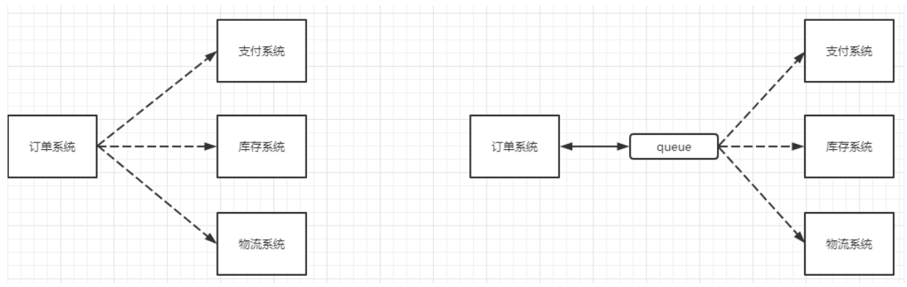
异步处理
有些服务间调用是异步的，例如 A 调用 B，B 需要花费很长时间执行，但是 A 需要知道 B 什么时候可使用消息总线，可以很方便解决这个问题， A 调用 B 服务后，只需要监听 B 处理完成的消息，当 B 处理完成后，会发送一条消息给 MQ，MQ 会将此消 息转发给 A 服务。这样 A 服务既不用循环调用 B 的查询 api，也不用提供 callback api。 同样B 服务也不用
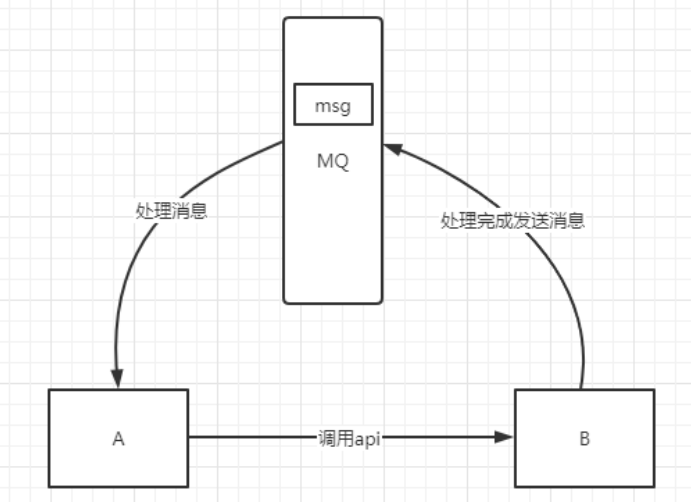
MQ的分类
消息队列
优点
缺点
RabbitMQ
是当前最主流的消息中间件之一。 ,由于 erlang 语言的高并发特性，性能较好；吞吐量到万级，MQ 功能比较完备,健壮、稳定、易用、跨平台、支持多种语言 如：Python、Ruby、.NET、Java、JMS、C、PHP、ActionScript、XMPP、STOMP等，支持 AJAX 文档齐全；开源提供的管理界面非常棒，用起来很好用,社区活跃度高；更新频率相当高
商业版需要收费,学习成本较高
Kafka
性能卓越 ，单机写入 TPS 约在百万条/秒，最大的优点，就是吞吐量高。时效性 ms 级可用性非常高，kafka 是分布式的 ，一个数据多个副本，少数机器宕机，不会丢失数据，不会导致不可用,消费者采用 Pull 方式获取消息, 消息有序, 通过控制能够保证所有消息被消费且仅被消费一次;有优秀的第三方Kafka Web 管理界面 Kafka-Manager；在日志领域比较成熟 ，被多家公司和多个开源项目使用；功能支持： 功能较为简单，主要支持简单的 MQ 功能，在大数据领域的实时计算以及日志采集 被大规模使用Kafka 单机超过 64 个队列/分区，Load 会发生明显的飙高现象，队列越多，load 越高，发送消息响应时间变长，使用短轮询方式，实时性取决于轮询间隔时间，消费失败不支持重试； 支持消息顺序，但是一台代理宕机后，就会产生消息乱序，社区更新较慢；
ActiveMQ
单机吞吐量万级，时效性 ms 级，可用性高，基于主从架构实现高可用性，消息可靠性较低的概率丢失数据
官方社区现在对 ActiveMQ 5.x 维护越来越少，高吞吐量场景较少使用 。
RocketMQ
单机吞吐量十万级,可用性非常高 ，分布式架构,消息可以做到 0 丢失,MQ 功能较为完善，还是分布式的，扩展性好,支持 10 亿级别的消息堆积，不会因为堆积导致性能下降 ,源码是 java 我们可以自己阅读源码，定制 自己公司的 MQ支持的客户端语言不多 ，目前是 java 及 c++，其中 c++不成熟；社区活跃度一般 ,没有在MQ核心中去实现 JMS 等接口,有些系统要迁移需要修改大量代码
RabbitMQ
Messaging that just works — RabbitMQ
RabbitMQ 是一个消息中间件：它接受并转发消息。你可以把它当做一个快递站点，当你要发送一个包裹时，你把你的包裹放到快递站，快递员最终会把你的快递送到收件人那里，按照这种逻辑 RabbitMQ 是一个快递站，一个快递员帮你传递快件。RabbitMQ 与快递站的主要区别在于，它不处理快件而是接收，存储和转发消息数据。
理论知识 四大核心概念 生产者 产生数据发送消息的程序是生产者
消费者 消费与接收具有相似的含义。消费者大多时候是一个等待接收消息的程序。请注意生产者，消费者和消息中间件很多时候并不在同一机器上。同一个应用程序既可以是生产者又是可以是消费者。
队列 队列是 RabbitMQ 内部使用的一种数据结构，尽管消息流经 RabbitMQ 和应用程序，但它们只能存储在队列中。队列仅受主机的内存和磁盘限制的约束，本质上是一个大的消息缓冲区。许多生产者可以将消息发送到一个队列，许多消费者可以尝试从一个队列接收数据。这就是我们使用队列的方式
交换机 交换机是 RabbitMQ 非常重要的一个部件，一方面它接收来自生产者的消息，另一方面它将消息推送到队列中。交换机必须确切知道如何处理它接收到的消息，是将这些消息推送到特定队列还是推送到多个队列，亦或者是把消息丢弃，这个得有交换机类型决定
RabbitMQ 核心部分(6大模式) 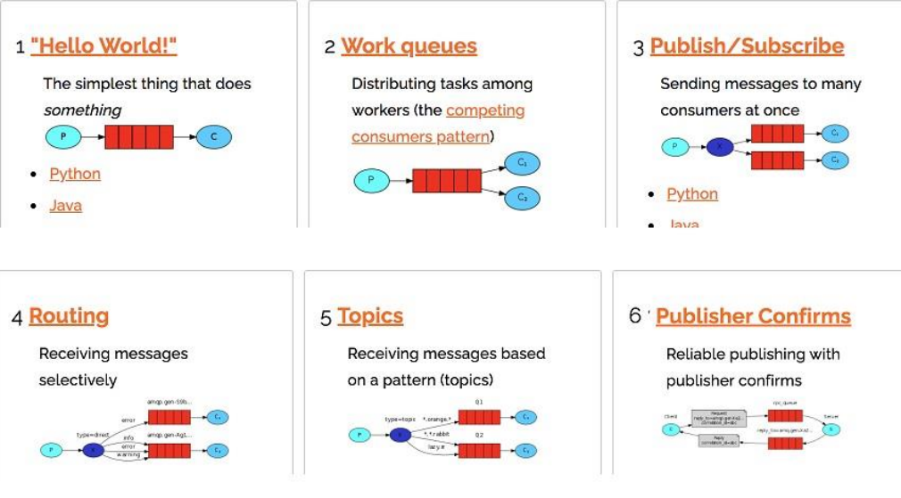
工作原理 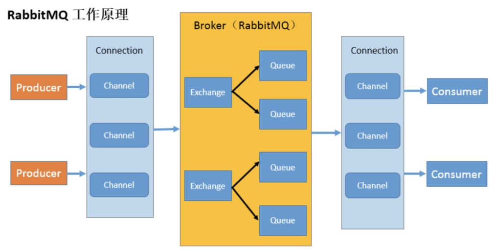
Broker ：接收和分发消息的应用，RabbitMQ Server 就是 Message Broker
Connection ：publisher／consumer 和 broker 之间的 TCP 连接
Channel ：如果每一次访问 RabbitMQ 都建立一个 Connection，在消息量大的时候建立 TCP Connection 的开销将是巨大的，效率也较低。Channel 是在 connection 内部建立的逻辑连接，如果应用程序支持多线程，通常每个 thread 创建单独的 channel 进行通讯，AMQP method 包含了 channel id 帮助客户端和 message broker 识别 channel，所以 channel 之间是完全隔离的。 Channel 作为轻量级的Connection 极大减少了操作系统建立 TCP connection 的开销
Queue ： 消息最终被送到这里等待 consumer 取走
Virtual host ：出于多租户和安全因素设计的，把 AMQP 的基本组件划分到一个虚拟的分组中，类似于网络中的 namespace 概念。当多个不同的用户使用同一个 RabbitMQ server 提供的服务时，可以划分出多个 vhost，每个用户在自己的 vhost 创建 exchange／queue 等
Exchange ： message 到达 broker 的第一站，根据分发规则，匹配查询表中的 routing key，分发消息到 queue 中去。常用的类型有：direct (point-to-point), topic (publish-subscribe) and fanout (multicast)
Binding ： exchange 和 queue 之间的虚拟连接，binding 中可以包含 routing key，Binding 信息被保
安装 下载地址: https://www.rabbitmq.com/download.html
如果是在windos下安装,推荐使用win系统的包管理器chocolatey进行安装, 安装教程
安装chocolatey :
1 2 3 4 5 6 7 8 Get-ExecutionPolicy Set-ExecutionPolicy AllSigned Set-ExecutionPolicy Bypass -Scope Process -Force; [System.Net.ServicePointManager]::SecurityProtocol = [System.Net.ServicePointManager]::SecurityProtocol -bor 3072; iex ((New-Object System.Net.WebClient).DownloadString('https://chocolatey.org/install.ps1')) choco -?
安装RabbitMQ
安装时会自动安装web管理端插件并且启动, 默认访问链接: http://localhost:15672/ , 默认登录名和密码都是: guest
注意: 无法访问可以检查防火墙是否已经关闭(常见于Linux系统)
假如出现下述的权限不足问题(一般常见于Linux中使用普通用户安装时), 可以使用命令添加一个管理员账户
在RabbitMQ 的 sbin 目录下,执行:
1 2 3 4 5 6 7 8 rabbitmqctl add_user admin 123 rabbitmqctl set_user_tags admin administrator rabbitmqctl set_permissions -p "/" admin ".*" ".*" ".*" rabbitmqctl list_users
RabbitMQ常用命令 注: window系统中如果没有为RabbitMQ的配置环境变量, 需要通过RabbitMQ命令行 即RabbitMQ Command Prompt,(这是安装包提供的一个快捷命令行链接，它指向 ) 执行命令
正常情况下，在 Windows 10 系统中安装完 RabbitMQ 之后，它会以 Windows 服务的形式,如果没运行则通过命令手动启动
1 2 3 4 5 6 7 8 9 10 11 12 13 14 15 16 rabbitmq-server rabbitmq-service stop rabbitmqctl status rabbitmqctl list_queues rabbitmq-plugins list rabbitmq-plugins disable 插件名称 rabbitmq-plugins enable 插件名称 rabbitmqctl cluster_status
入门案例Hello World 下面将用 Java 编写两个程序。发送单个消息的生产者和接收消息并打印出来的消费者。我们将介绍 Java API 中的一些细节。
首先导入依赖 1 2 3 4 5 6 7 8 9 10 11 12 13 14 <dependencies > <dependency > <groupId > com.rabbitmq</groupId > <artifactId > amqp-client</artifactId > <version > 5.8.0</version > </dependency > <dependency > <groupId > commons-io</groupId > <artifactId > commons-io</artifactId > <version > 2.6</version > </dependency > </dependencies >
启动MQ服务端 , 可以通过查看是否能访问web检查服务是否启动成功
编写代码: 生成者发送消息
1 2 3 4 5 6 7 8 9 10 11 12 13 14 15 16 17 18 19 20 21 22 23 24 25 26 27 28 29 30 31 32 33 public class Producer { private final static String QUEUE_NAME = "hello" ; public static void main (String[] args) throws Exception { ConnectionFactory factory = new ConnectionFactory (); factory.setHost("127.0.0.1" ); factory.setUsername("admin" ); factory.setPassword("123" ); Connection connection = factory.newConnection(); Channel channel = connection.createChannel(); channel.queueDeclare(QUEUE_NAME, false , false , false , null ); String message = "hello world" ; channel.basicPublish("" , QUEUE_NAME, null , message.getBytes()); System.out.println(" 消息发送完毕" ); } }
消费者接收消息
1 2 3 4 5 6 7 8 9 10 11 12 13 14 15 16 17 18 19 20 21 22 23 24 25 26 27 28 29 30 public class Consumer { private final static String QUEUE_NAME = "hello" ; public static void main (String[] args) throws Exception { ConnectionFactory factory = new ConnectionFactory (); factory.setHost("127.0.0.1" ); factory.setUsername("admin" ); factory.setPassword("123" ); Connection connection = factory.newConnection(); Channel channel = connection.createChannel(); System.out.println(" 等待接收消息 ......... " ); DeliverCallback deliverCallback = (consumerTag, delivery) -> { String message = new String (delivery.getBody()); System.out.println(message); }; CancelCallback cancelCallback = (consumerTag) -> { System.out.println(" 消息消费被中断" ); }; channel.basicConsume(QUEUE_NAME, true , deliverCallback, cancelCallback); } }
临时队列 每当我们连接到 Rabbit 时，我们都需要一个全新的空队列，为此我们可以创建一个具有随机名称的队列，或者能让服务器为我们选择一个随机队列名称那就更好了。其次一旦我们断开了消费者的连接，队列将被自动删除。
1 2 String queueName = channel.queueDeclare().getQueue();
Web端UI界面预览:
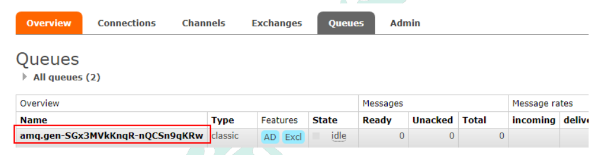
工作队列Work Queues 工作队列(又称任务队列)的主要思想是避免立即执行资源密集型任务，而不得不等待它完成 。相反我们安排任务在之后执行。我们把任务封装为消息并将其发送到队列 。在后台运行的工作进程将弹出任务并最终执行作业。当有多个工作线程时，这些工作线程将一起处理这些任务。
案例演示-轮训消费 下面我们将通过运行两个消费者的进程来模拟上述场景 :
工具类提取公共配置:
1 2 3 4 5 6 7 8 9 10 11 12 public class RabbitMqUtils { public static Channel getChannel () throws Exception{ ConnectionFactory factory = new ConnectionFactory (); factory.setHost("127.0.0.1" ); factory.setUsername("admin" ); factory.setPassword("123" ); Connection connection = factory.newConnection(); return connection.createChannel(); } }
生产者:
通过控制台输入内容并且发送,模拟发送大量消息
1 2 3 4 5 6 7 8 9 10 11 12 13 public class Worker01 { static String QUEUES_NAME = "任务队列1" ; public static void main (String[] args) throws Exception { Channel channel = RabbitMqUtils.getChannel(); channel.queueDeclare(QUEUES_NAME, false , false , false , null ); Scanner scanner = new Scanner (System.in); while (scanner.hasNext()){ String message = scanner.next(); channel.basicPublish("" , QUEUES_NAME,null , message.getBytes(StandardCharsets.UTF_8)); System.out.println("发送完毕,消息内容为: " +message); } } }
消费者1和消费者2轮流接收消息:
消费者1
1 2 3 4 5 6 7 8 9 10 11 12 13 14 15 16 17 18 19 20 public class Task01 { static String QUEUES_NAME = "任务队列1" ; public static void main (String[] args) throws Exception { Channel channel = RabbitMqUtils.getChannel(); System.out.println("C1正在等待接收消息..." ); DeliverCallback deliverCallback = (consumerTag, delivery)->{ String message = new String (delivery.getBody()); System.out.println("接收到信息内容为: " + message); }; CancelCallback cancelCallback = (consumerTag)->{ System.out.println(consumerTag + "取消接收消息!" ); }; channel.basicConsume(QUEUES_NAME, true , deliverCallback, cancelCallback); } }
消费者2
1 2 3 4 5 6 7 8 9 10 11 12 13 14 15 16 17 18 19 20 public class Task02 { static String QUEUES_NAME = "任务队列1" ; public static void main (String[] args) throws Exception { Channel channel = RabbitMqUtils.getChannel(); System.out.println("C2正在等待接收消息..." ); DeliverCallback deliverCallback = (consumerTag, delivery)->{ String message = new String (delivery.getBody()); System.out.println("接收到信息内容为: " + message); }; CancelCallback cancelCallback = (consumerTag)->{ System.out.println(consumerTag + "取消接收消息!" ); }; channel.basicConsume(QUEUES_NAME, true , deliverCallback, cancelCallback); } }
效果展示: 通过程序执行发现生产者总共发送 4 个消息，消费者 1 和消费者 2 分别分得两个消息，并且是按照有序的一个接收一次消息
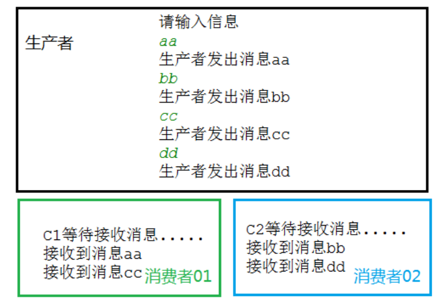
总结: 消息队列设置为不共享时, 该队列的消息默认消费策略为轮训模式 , 即消费这依次轮流消费消息
消息应答 消费者完成一个任务可能需要一段时间，如果其中一个消费者处理一个长的任务并仅只完成了部分突然它挂掉了，会发生什么情况。RabbitMQ 一旦向消费者传递了一条消息，便立即将该消息标记为删除。在这种情况下，突然有个消费者挂掉了，我们将丢失正在处理的消息。以及后续发送给该消费这的消息，因为它无法接收到。
为了保证消息在发送过程中不丢失，rabbitmq 引入消息应答机制，消息应答就是: 消费者在接收到消息并且处理该消息之后，告诉 rabbitmq 它已经处理了， rabbitmq 可以把该消息删除了。
自动应答(默认) 消息发送后立即被认为已经传送成功，这种模式需要在高吞吐量和数据传输安全性方面做权衡 ,因为这种模式如果消息在接收到之前，消费者那边出现连接或者 channel 关闭，那么消息就丢失了,当然另一方面这种模式消费者那边可以传递过载的消息， 没有对传递的消息数量进行限制， 当然这样有可能使得消费者这边由于接收太多还来不及处理的消息，导致这些消息的积压，最终使得内存耗尽，最终这些消费者线程被操作系统杀死， 所以这种模式仅适用在消费者可以高效并以某种速率能够处理这些消息或者消息本身不是特别重要的情况下使用。
手动应答 Java的API中可以通过如下方法进行手动消息应答:
Channel.basicAck: (用于肯定确认) RabbitMQ 已知道该消息并且成功的处理消息，可以将其丢弃了Channel.basicNack: (用于否定确认) , 但是可能下次还要处理该消息,不可以将消息丢弃 Channel.basicReject: (用于否定确认) 与 Channel.basicNack 相比少一个参数, 不处理该消息了直接拒绝，可以将其丢弃了
批量应答 手动应答的好处是可以批量应答并且减少网络拥堵 , 通过设置应答方法的参数Multiple为true实现,具体如下所示:
multiple 的 true 和 false 代表不同意思:
true 代表批量应答 channel 上未应答的消息 比如说 channel 上有传送 tag 的消息 5,6,7,8 当前 tag 是 8 那么此时5-8 的这些还未应答的消息都会被确认收到消息应答
false 同上面相比只会应答 tag=8 的消息 5,6,7 这三个消息依然不会被确认收到消息应答
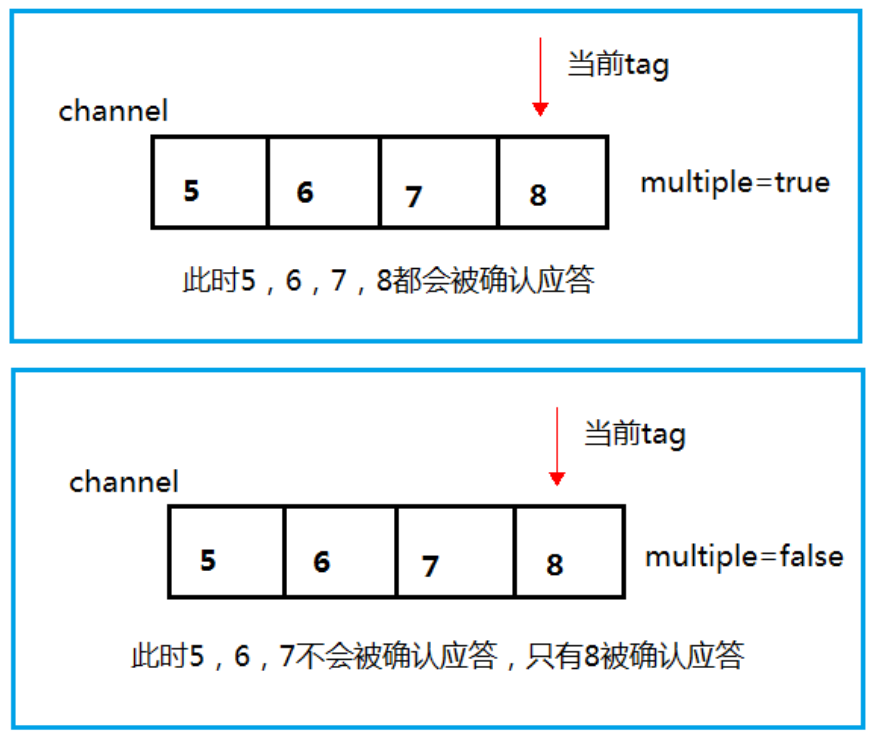
消息自动重新入队 如果消费者由于某些原因失去连接 (其通道已关闭，连接已关闭或 TCP 连接丢失)，导致消息未发送 ACK 确认，RabbitMQ 将了解到消息未完全处理，并将对其重新排队。 如果此时其他消费者可以处理，它将很快将其重新分发给另一个消费者。这样，即使某个消费者偶尔死亡，也可以确保不会丢失任何消息。
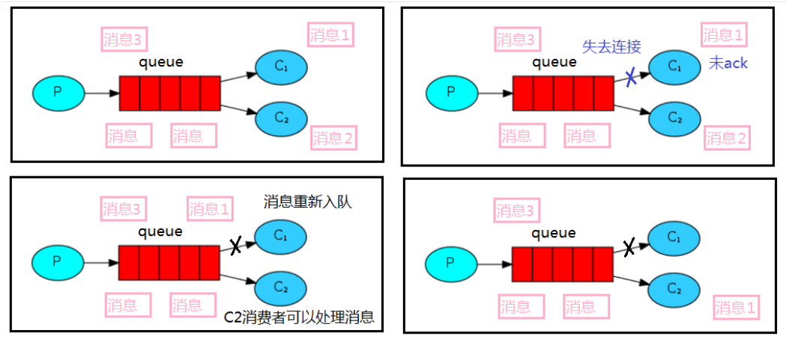
案例-手动应答 导入依赖编写工具类等前提工作不再赘述
实际上我们只需修改前面例子中消费者的代码中,设置自动应答为fasle,并且实现手动进行应答的代码即可
核心代码:
1 2 3 4 5 6 7 8 9 10 DeliverCallback deliverCallback = (consumerTag, delivery)->{ String message = new String (delivery.getBody()); System.out.println("接收到信息内容为: " + message); channel.basicAck(delivery.getEnvelope().getDeliveryTag(), false ); }; channel.basicConsume(QUEUES_NAME,false , deliverCallback, cancelCallback);
下面用一个完整的例子来演示:
有两个消费者, 两个消费者工作的时间不同, 我们用线程休眠来模拟, 当休眠指定时间后,手动应答
消费者1
1 2 3 4 5 6 7 8 9 10 11 12 13 14 15 16 17 18 19 20 21 22 23 24 25 26 27 28 29 public class Task01 { static String QUEUES_NAME = "任务队列1" ; public static void main (String[] args) throws Exception{ Channel channel = RabbitMqUtils.getChannel(); System.out.println("C1正在等待接收消息...处理时间较短" ); DeliverCallback deliverCallback = (consumerTag, delivery)->{ String message = new String (delivery.getBody()); try { Thread.sleep(1000 * 2 ); } catch (InterruptedException e) { e.printStackTrace(); } System.out.println("接收到信息内容为: " + message); channel.basicAck(delivery.getEnvelope().getDeliveryTag(), false ); }; CancelCallback cancelCallback = (consumerTag)->{ System.out.println(consumerTag + "取消接收消息!" ); }; boolean aotuAck = false ; channel.basicConsume(QUEUES_NAME,aotuAck, deliverCallback, cancelCallback); } }
消费者2
1 2 3 4 5 6 7 8 9 10 11 12 13 14 15 16 17 18 19 20 21 22 23 24 25 26 27 28 public class Task02 { static String QUEUES_NAME = "任务队列1" ; public static void main (String[] args) throws Exception { Channel channel = RabbitMqUtils.getChannel(); System.out.println("C2正在等待接收消息...处理时间较长" ); DeliverCallback deliverCallback = (consumerTag, delivery)->{ String message = new String (delivery.getBody()); try { Thread.sleep(1000 * 30 ); } catch (InterruptedException e) { e.printStackTrace(); } System.out.println("接收到信息内容为: " + message); channel.basicAck(delivery.getEnvelope().getDeliveryTag(), false ); }; CancelCallback cancelCallback = (consumerTag)->{ System.out.println(consumerTag + "取消接收消息!" ); }; boolean aotuAck = false ; channel.basicConsume(QUEUES_NAME,aotuAck, deliverCallback, cancelCallback); } }
生产者
1 2 3 4 5 6 7 8 9 10 11 12 13 public class Worker01 { static String QUEUES_NAME = "任务队列1" ; public static void main (String[] args) throws Exception { Channel channel = RabbitMqUtils.getChannel(); channel.queueDeclare(QUEUES_NAME, false , false , true , null ); Scanner scanner = new Scanner (System.in); while (scanner.hasNext()){ String message = scanner.next(); channel.basicPublish("" , QUEUES_NAME,null , message.getBytes(StandardCharsets.UTF_8)); System.out.println("发送完毕,消息内容为: " +message); } } }
预期效果 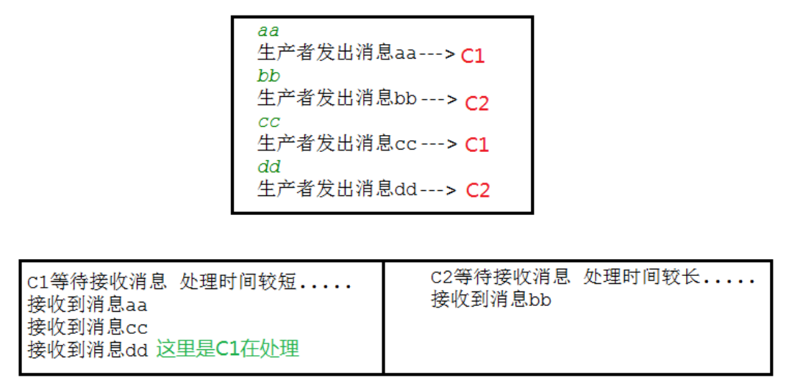
分发预取值 在最开始的时候我们学习到 RabbitMQ 分发消息采用的轮训分发 ，但是在某种场景下这种策略并不是很好，比方说有两个消费者在处理任务，其中有个消费者 1 处理任务的速度非常快，而另外一个消费者 2处理速度却很慢，这个时候我们还是采用轮训分发的化就会到这处理速度快的这个消费者很大一部分时间处于空闲状态，而处理慢的那个消费者一直在干活，这种分配方式在这种情况下其实就不太好，但是RabbitMQ 并不知道这种情况它依然很公平的进行分发。
为了避免轮训分发策略，我们通过如下设置，使用贪婪分发 （只要有消费者空闲，就把消息分发给空闲的消费者，而不依次轮流消费）
(注: 需要在所有的消费者代码中设置才有效)
意思就是如果这个任务我还没有处理完或者我还没有应答你，你先别分配给我 ，我目前只能处理一个任务，然后 rabbitmq 就会把该任务分配给没有那么忙的那个空闲消费者 ，当然如果所有的消费者都没有完成手上任务，队列还在不停的添加新任务，队列有可能就会遇到队列被撑满的情况，这个时候就只能添加新的 worker 或者改变其他存储任务的策略。
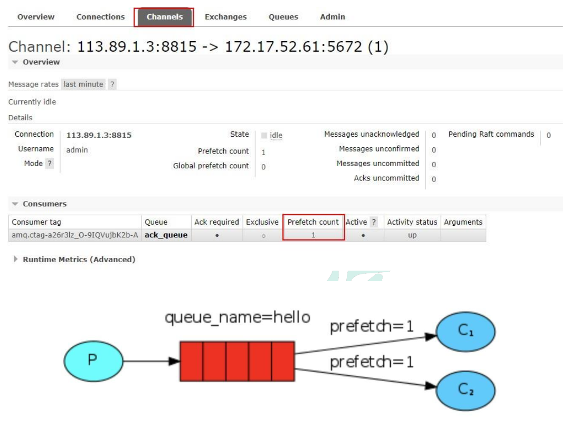
案例-贪婪消费 拿之前消息答应的案例进行修改, 如下所示:
消费者1
1 2 3 4 5 6 7 8 9 10 11 12 13 14 15 16 17 18 19 20 21 22 23 24 25 26 27 28 29 30 31 public class Task01 { static String QUEUES_NAME = "任务队列1" ; public static void main (String[] args) throws Exception{ Channel channel = RabbitMqUtils.getChannel(); channel.basicQos(1 ); System.out.println("C1正在等待接收消息...处理时间较短" ); DeliverCallback deliverCallback = (consumerTag, delivery)->{ String message = new String (delivery.getBody()); try { Thread.sleep(1000 * 2 ); } catch (InterruptedException e) { e.printStackTrace(); } System.out.println("接收到信息内容为: " + message); channel.basicAck(delivery.getEnvelope().getDeliveryTag(), false ); }; CancelCallback cancelCallback = (consumerTag)->{ System.out.println(consumerTag + "取消接收消息!" ); }; boolean aotuAck = false ; channel.basicConsume(QUEUES_NAME,aotuAck, deliverCallback, cancelCallback); } }
消费者2
1 2 3 4 5 6 7 8 9 10 11 12 13 14 15 16 17 18 19 20 21 22 23 24 25 26 27 28 29 30 public class Task02 { static String QUEUES_NAME = "任务队列1" ; public static void main (String[] args) throws Exception { Channel channel = RabbitMqUtils.getChannel(); channel.basicQos(1 ); System.out.println("C2正在等待接收消息...处理时间较长" ); DeliverCallback deliverCallback = (consumerTag, delivery)->{ String message = new String (delivery.getBody()); try { Thread.sleep(1000 * 10 ); } catch (InterruptedException e) { e.printStackTrace(); } System.out.println("接收到信息内容为: " + message); channel.basicAck(delivery.getEnvelope().getDeliveryTag(), false ); }; CancelCallback cancelCallback = (consumerTag)->{ System.out.println(consumerTag + "取消接收消息!" ); }; boolean aotuAck = false ; channel.basicConsume(QUEUES_NAME,aotuAck, deliverCallback, cancelCallback); } }
生产者无需改动
效果展示 由于消费者1处理速度较快,所以将AA,CC ,DD给消费掉了(因为消费者1在消费掉AA的时, 消费者2还在没消费完BB, 所以消费者1会接着消费 ), 而BB则交给了消费者2进行消费(最开始就分配好了)
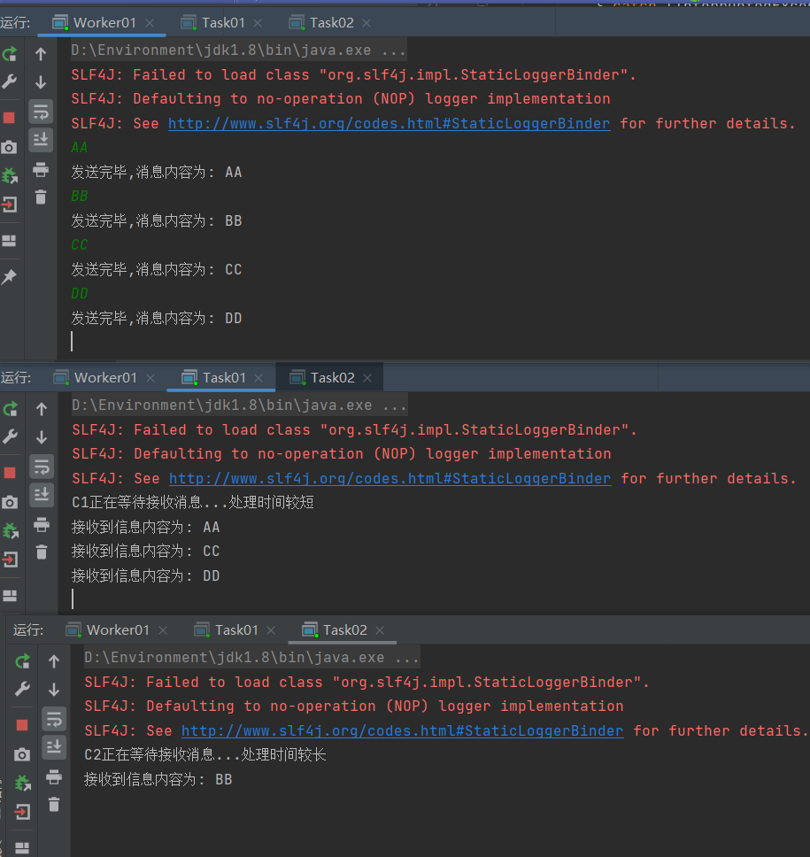
预取值 本身消息的发送就是异步发送的，所以在任何时候，channel 上肯定不止只有一个消息 另外来自消费者的手动确认本质上也是异步的。因此这里就存在一个未确认的消息缓冲区 ，因此希望开发人员能限制此缓冲区的大小，以避免缓冲区里面无限制的未确认消息问题 。这个时候就可以==通过使用 basic.Qos() 方法设置“预取计数”值来完成==的。该值定义通道上允许的未确认消息的最大数量。一旦数量达到配置的数量，RabbitMQ 将停止在通道上传递更多消息，除非至少有一个未处理的消息被确认， 例如，假设在通道上有未确认的消息 5、6、7，8，并且通道的预取计数设置为 4，此时RabbitMQ 将不会在该通道上再传递任何消息，除非至少有一个未应答的消息被 ack。比方说 tag=6 这个消息刚刚被确认 ACK，RabbitMQ 将会感知这个情况到并再发送一条消息。消息应答和 QoS 预取值对用户吞吐量有重大影响。通常，增加预取值将提高向消费者传递消息的速度 。虽然自动应答传输消息速率是最佳的，但是，在这种情况下已传递但尚未处理 的消息的数量也会增加，从而增加了消费者的 RAM 消耗 (随机存取存储器), 应该小心使用具有无限预处理的自动确认模式或手动确认模式 ，消费者消费了大量的消息如果没有确认的话，会导致消费者连接节点的内存消耗变大，所以找到合适的预取值是一个反复试验的过程，不同的负载该值取值也不同 100 到 300 范围内的值通常可提供最佳的吞吐量 ，并且不会给消费者带来太大的风险。预取值为 1 是最保守的。当然这将使吞吐量变得很低，特别是消费者连接延迟很严重的情况下，特别是在消费者连接等待时间较长的环境中。对于大多数应用来说，稍微高一点的值将是最佳的.
**个人理解: 对于预取值, 实际上有点类似消费者缓冲区(即消费者缓冲区未满时, 即使当前的消息他还没有进行消费完,但是他依然可以从信道中接收消息) **
案例: 比如还是有两个消费者进行如下设置:
消费者1: 消费所需时间为1秒,设置缓存区为2
消费者2: 消费所需时间为30秒, 设置缓存区为5
生产者连续发送消息: ,1,2,3,4,5,6,7, 结果如下:
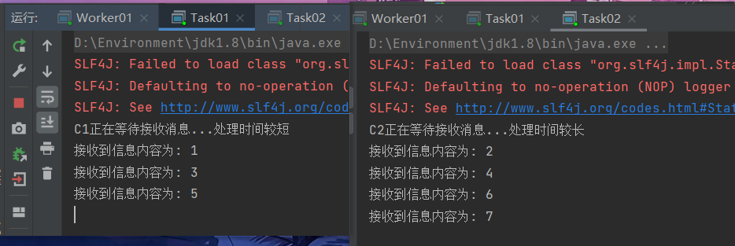
两个消费者在未填满时依然遵循轮训策略接收消息, 因为设置了缓冲区,即使C2处理的非常慢,也会是C1拿一个C2拿一个,但是缓冲区满了就不会再拿,不过需要注意,(从缓存区)消费掉一条消息,就又可以拿了
持久化 如何保障当 RabbitMQ 服务停掉以后消息生产者发送过来的消息不丢失。默认情况下 RabbitMQ 退出或由于某种原因崩溃时，它忽视队列和消息，除非告知它不要这样做。确保消息不会丢失需要做两件事： 我们需要将队列和消息都标记为持久化。
队列持久化 之前我们创建的队列都是非持久化的，rabbitmq 如果重启的化，该队列就会被删除掉，如果要队列实现持久化 需要在声明队列的时候把 durable 参数设置为持久化
1 2 boolean durable = true ;channel.queueDeclare(QUEUES_NAME, durable, false , true , null );
但是需要注意的就是如果之前声明的队列不是持久化的，需要把原先队列先删除，或者重新创建一个持久化的队列 ，不然就会出现错误
以下为控制台中持久化与非持久化队列的 UI 显示区:
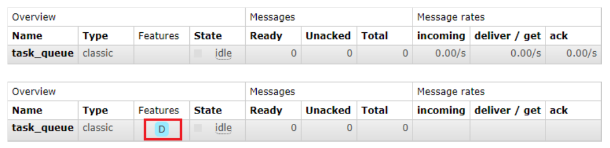
这个时候即使重启 rabbitmq 队列也依然存在
消息持久化 要想让消息实现持久化需要在消息生产者修改代码，MessageProperties.PERSISTENT_TEXT_PLAIN 添加这个属性。
1 2 3 4 boolean durable = true ;channel.queueDeclare(QUEUES_NAME, durable, false , true , null ); channel.basicPublish("" , QUEUES_NAME, MessageProperties.PERSISTENT_TEXT_PLAIN, message.getBytes(StandardCharsets.UTF_8));
将消息标记为持久化并不能完全保证不会丢失消息 。尽管它告诉 RabbitMQ 将消息保存到磁盘，但是 这里依然存在当消息刚准备存储在磁盘的时候 但是还没有存储完，消息还在缓存的一个间隔点。 此时并没 有真正写入磁盘。持久性保证并不强，但是对于我们的简单任务队列而言，这已经绰绰有余了。如果需要 更强有力的持久化策略，参考后边课件发布确认章节。
发布确认 生产者将信道设置成 confirm 模式，一旦信道进入 confirm 模式 ， 所有在该信道上面发布的消息都将会被指派一个唯一的 ID (从 1 开始)，一旦消息被投递到所有匹配的队列之后，broker （服务端） 就会发送一个确认给生产者(包含消息的唯一 ID)，这就使得生产者知道消息已经正确到达目的队列了，如果消息和队列是可持久化的，那么确认消息会在将消息写入磁盘之后发出，broker 回传给生产者的确认消息中 delivery-tag 域包含了确认消息的序列号 ，此外 broker 也可以设置 basic.ack 的multiple 域，表示到这个序列号之前的所有消息都已经得到了处理。
注意： 这个优点类似消息应答，但是区别于消息应答, 因此消息应答消费者是向broker发送的,而发布确认则是生产者向broker发送后broker成功接收后向生产者做出应答告诉生产者消息已经他发送的消息已成功发送
confirm 模式最大的好处在于他是异步的 ，一旦发布一条消息，生产者应用程序就可以在等信道返回确认的同时继续发送下一条消息，当消息最终得到确认之后，生产者应用便可以通过回调方法来处理该确认消息 ，如果 RabbitMQ 因为自身内部错误导致消息丢失，就会发送一条 nack 消息 ，生产者应用程序同样可以在回调方法中处理该 nack 消息。
发布确认策略 开启发布确认的方法:
1 channel.confirmSelect();
单个确认发布 这是一种简单的确认方式，它是一种 同步确认发布的方式，也就是发布一个消息之后只有它被确认发布，后续的消息才能继续发布 ,
通过调用waitForConfirmsOrDie(long)这个方法只有在消息被确认的时候才返回，如果在指定时间范围内这个消息没有被确认那么它将抛出异常。
这种确认方式有一个最大的缺点就是: 发布速度特别的慢 ，因为如果没有确认发布的消息就会阻塞所有后续消息的发布，这种方式最多提供每秒不超过数百条发布消息的吞吐量。当然对于某些应用程序来说这可能已经足够了。
1 2 3 4 5 6 7 8 9 10 11 12 13 14 15 16 17 18 19 20 21 22 23 24 25 static int MESSAGE_COUNT = 1000 ; public static void individuallyConfirm () throws Exception { Channel channel = RabbitMqUtils.getChannel(); String queueName = UUID.randomUUID().toString(); channel.queueDeclare(queueName, false , false , true , null ); channel.confirmSelect(); long begin = System.currentTimeMillis(); for (int i = 0 ; i < MESSAGE_COUNT; i++) { String message = i + "" ; channel.basicPublish("" , queueName, null , message.getBytes()); boolean flag = channel.waitForConfirms(); if (flag) { System.out.println(" 消息发送成功" ); } } long end = System.currentTimeMillis(); System.out.println(" 发布" + MESSAGE_COUNT + " 个单独确认消息, 耗时" + (end - begin) + "ms" ); }
批量确认发布 上面那种方式非常慢，与单个等待确认消息相比，先发布一批消息然后一起确认可以极大地提高吞吐量，当然这种方式的缺点就是:当发生故障导致发布出现问题时，不知道是哪个消息出现问题了 ，我们必须将整个批处理保存在内存中，以记录重要的信息而后重新发布消息。当然这种方案仍然是同步的，也一样阻塞消息的发布。
1 2 3 4 5 6 7 8 9 10 11 12 13 14 15 16 17 18 19 20 21 22 23 24 25 26 27 28 29 30 31 32 33 static int MESSAGE_COUNT = 1000 ; public static void batchConfirm () throws Exception { Channel channel = RabbitMqUtils.getChannel(); String queueName = UUID.randomUUID().toString(); channel.queueDeclare(queueName, false , false , true , null ); channel.confirmSelect(); int batchSize = 100 ; int outstandingMessageCount = 0 ; long begin = System.currentTimeMillis(); for (int i = 0 ; i < MESSAGE_COUNT; i++) { String message = i + "" ; channel.basicPublish("" , queueName, null , message.getBytes()); System.out.println(" 消息发送成功" ); outstandingMessageCount++; if (outstandingMessageCount == batchSize) { channel.waitForConfirms(); outstandingMessageCount = 0 ; } } if (outstandingMessageCount > 0 ) { channel.waitForConfirms(); } long end = System.currentTimeMillis(); System.out.println(" 发布" + MESSAGE_COUNT + " 个批量确认消息, 耗时" + (end - begin) + "ms" ); }
异步确认发布 异步确认虽然编程逻辑比上两个要复杂，但是性价比最高，无论是可靠性还是效率都没得说，他是利用回调函数来达到消息可靠性传递的，这个中间件也是通过函数回调来保证是否投递成功 ，下面就让我们来详细讲解异步确认是怎么实现的。
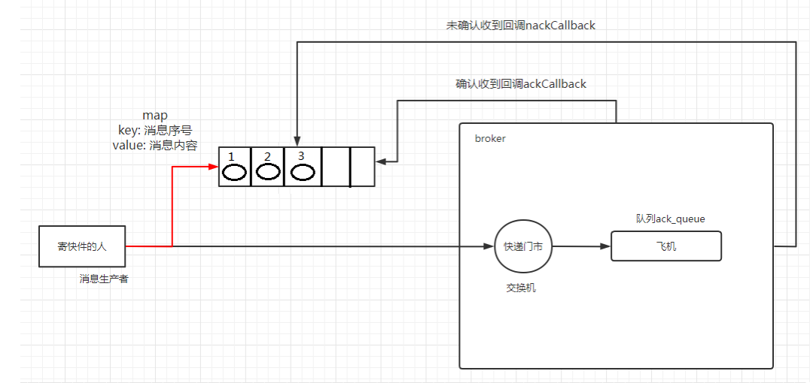
代码实现:
1 2 3 4 5 6 7 8 9 10 11 12 13 14 15 16 17 18 19 20 21 22 23 24 25 26 27 28 29 30 31 32 33 34 35 36 37 38 39 40 41 42 43 44 45 46 47 48 49 50 51 52 53 54 55 56 57 58 59 60 61 62 63 64 65 66 67 static int MESSAGE_COUNT = 1000 ; public static void main (String[] args) throws Exception { Channel channel = RabbitMqUtils.getChannel(); String queueName = UUID.randomUUID().toString(); channel.queueDeclare(queueName, false , false , true , null ); channel.confirmSelect(); ConcurrentSkipListMap<Long, String> outstandingConfirms = new ConcurrentSkipListMap <>(); ConfirmCallback ackCallback = (sequenceNumber, multiple) -> { if (multiple) { ConcurrentNavigableMap<Long, String> confirmed = outstandingConfirms.headMap(sequenceNumber, true ); confirmed.clear(); System.out.println(sequenceNumber+" ---已批量确认" ); } else { outstandingConfirms.remove(sequenceNumber); System.out.println(sequenceNumber+" ---已确认" ); } }; ConfirmCallback nackCallback = (sequenceNumber, multiple) -> { String message = outstandingConfirms.get(sequenceNumber); System.out.println(" 发布的消息" + message + " 未被确认，序列号" + sequenceNumber); }; channel.addConfirmListener(ackCallback, nackCallback); long begin = System.currentTimeMillis(); for (int i = 0 ; i < MESSAGE_COUNT; i++) { String message = " 消息" + i; outstandingConfirms.put(channel.getNextPublishSeqNo(), message); channel.basicPublish("" , queueName, null , message.getBytes()); System.out.println(channel.getNextPublishSeqNo()+" ---发送成功!" ); } long end = System.currentTimeMillis(); System.out.println("发布" + MESSAGE_COUNT + " 个异步确认消息, 耗时" + (end - begin) + "ms" ); }
如何异步处理未确认的消息?
最好的解决的解决方案就是把未确认的消息放到一个基于内存的能被发布线程访问的队列，比如说用 ConcurrentLinkedQueue 这个队列在 confirm callbacks 与发布线程之间进行消息的传递。
确认策略对比:
策略
特点
单独发布消息
同步等待确认，简单，但吞吐量非常有限。
批量发布消息
批量同步等待确认，简单，合理的吞吐量，一旦出现问题但很难推断出是那条消息出现了问题。
异步处理
最佳性能和资源使用，在出现错误的情况下可以很好地控制，但是实现起来稍微难些
交换机(Exchanges) RabbitMQ 消息传递模型的核心思想是: 生产者生产的消息从不会直接发送到队列 。实际上，通常生产者甚至都不知道这些消息传递传递到了哪些队列中。相反，生产者只能将消息发送到交换机(exchange)， 交换机工作的内容非常简单，一方面它接收来自生产者的消息，另一方面将它们推入队列 。交换机必须确切知道如何处理收到的消息。是应该把这些消息放到特定队列还是说把他们到许多队列中还是说应该丢弃它们。这就的由交换机的类型来决定。
无名交换机 前面部分我们对 exchange 一无所知，但仍然能够将消息发送到队列。之前能实现的原因是因为我们使用的是默认交换，我们通过空字符串(“”)进行标识。
1 channel.basicPublish("" , QUEUE_NAME, null , message.getBytes());
第一个参数是交换机的名称。空字符串表示默认或无名称交换机：消息能路由发送到队列中其实是由 routingKey(bindingkey)绑定 key 指定的，如果它存在的话
绑定(bindings) 什么是 bingding 呢，binding 其实是 exchange 和 queue 之间的桥梁，指明 exchange 和哪个队列进行了绑定关系 。
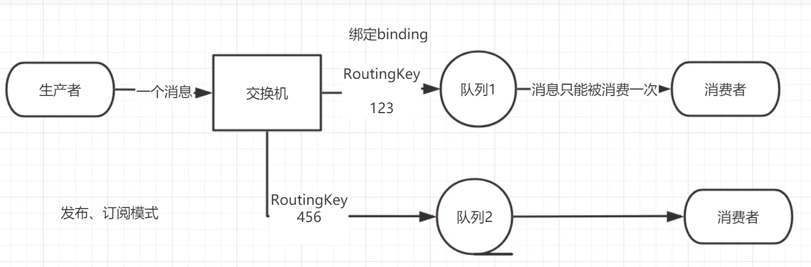
交换机类型 有如下几种类型
直接(direct)
主题(topic)
标题(headers)
扇出(fanout)
详细介绍如下:
Direct Exchange（直连交换机） 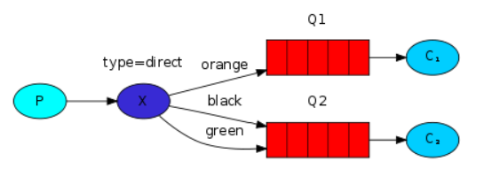
直连型交换机背后的路由算法很简单——消息会传送给绑定键与消息的路由键完全匹配的那个队列 。 我们用直连交换机取代了只会无脑广播的扇形交换机，并且具备了选择性接收消息的能力。
这种配置下，我们可以看到有两个队列Q1、Q2绑定到了直连交换机X上。第一个队列用的是橘色（orange）绑定键，第二个有两个绑定键，其中一个绑定键是黑色（black），另一个绑定键是绿色（green）。在此设置中，发布到交换机的带有橘色（orange）路由键的消息会被路由给队列Q1。带有黑色（black）或绿色（green）路由键的消息会被路由给Q2。其他的消息则会被丢弃
Fanout Exchange（扇型交换机） 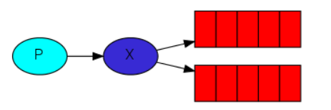
当一个Msg发送到扇形交换机X上时，则扇形交换机X会将消息分别发送给所有绑定到X上的消息队列。 扇形交换机将消息路由给绑定到自身的所有消息队列，也就是说路由键在扇形交换机里没有作用 ，故消息队列绑定扇形交换机时，路由键可为空。这个模式类似于广播。
Topic Exchange（主题交换机） 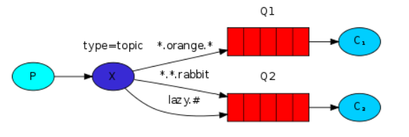
主题交换机: 根据规则模糊匹配路由键
（1）路由键和绑定键命名
消息路由键—发送到主题交换机的消息所携带的路由键（routing_key）不能随意命名——它必须是一个用点号分隔的词列表。当中的词可以是任何单词，不过一般都会指定一些跟消息有关的特征作为这些单词。列举几个有效的路由键的例子：“stock.usd.nyse”, “nyse.vmw”, “quick.orange.rabbit”。只要不超过255个字节，词的长度由你来定。
绑定键（binding key）也得使用相同的格式。主题交换机背后的逻辑跟直连交换机比较相似——一条携带特定路由键（routing key）的消息会被投送给所有绑定键（binding key）与之相匹配的队列。尽管如此，仍然有两条与绑定键相关的特殊情况：
* (星号) 能够替代一个单词。
# (井号) 能够替代零个或多个单词。
（2）示例解析，如上图：
队列绑定键解释：
Q1针对所有的橘色orange动物。消息路由键解释：
一个带有”quick.orange.rabbit”路由键的消息会给两个队列都进行投送。消息”lazy.orange.elephant”也会投送给这两个队列。
另外一方面，“quick.orange.fox” 只会给第一个队列。”lazy.pink.rabbit”虽然与两个绑定键都匹配，但只会给第二个队列投送一遍。“quick.brown.fox” 没有匹配到任何绑定，因此会被丢弃掉
（3）异常情况
（4）注意事项主题交换机非常强大，并且可以表现的跟其他交换机相似。
当一个队列使用”#”（井号）绑定键进行绑定。它会表现的像扇形交换机一样，不理会路由键，接收所有消息。
当绑定当中不包含任何一个 “*” (星号) 和 “#” (井号)特殊字符的时候，主题交换机会表现的跟直连交换机一毛一样。
头交换机类似与主题交换机 ，但是却和主题交换机有着很大的不同。主题交换机使用路由键来进行消息的路由，而头交换机使用消息属性来进行消息的分发，通过判断消息头的值能否与指定的绑定相匹配来确立路由规则。
Fanout-发布订阅 案例 下面将通过实现如下案例来演示广播交换机
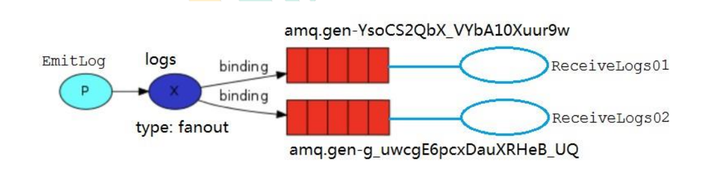
Logs 和临时队列的绑定关系如下图
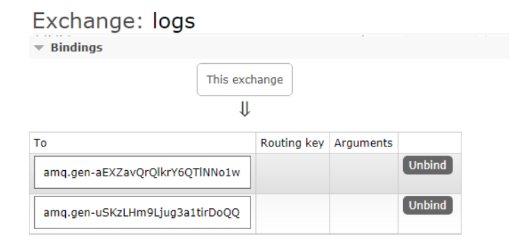
EmitLog:
1 2 3 4 5 6 7 8 9 10 11 12 13 14 15 16 17 18 19 20 21 public class EmitLog { private static final String EXCHANGE_NAME = "logs" ; public static void main (String[] argv) throws Exception { Channel channel = RabbitMqUtils.getChannel(); channel.exchangeDeclare(EXCHANGE_NAME, "fanout" ); Scanner sc = new Scanner (System.in); System.out.println(" 请输入信息" ); while (sc.hasNext()) { String message = sc.nextLine(); channel.basicPublish(EXCHANGE_NAME, "" , null , message.getBytes("UTF-8" )); System.out.println(" 生产者发出消息" + message); } } }
ReceiveLogs01:
1 2 3 4 5 6 7 8 9 10 11 12 13 14 15 16 17 18 19 20 public class ReceiveLogs01 { private static final String EXCHANGE_NAME = "logs" ; public static void main (String[] argv) throws Exception { Channel channel = RabbitMqUtils.getChannel(); channel.exchangeDeclare(EXCHANGE_NAME, "fanout" ); String queueName = channel.queueDeclare().getQueue(); channel.queueBind(queueName, EXCHANGE_NAME, "" ); System.out.println("ReceiveLogs01等待接收消息... " ); DeliverCallback deliverCallback = (consumerTag, delivery) -> { String message = new String (delivery.getBody(), "UTF-8" ); System.out.println(" 控制台打印接收到的消息" +message); }; channel.basicConsume(queueName, true , deliverCallback, consumerTag -> { }); } }
ReceiveLogs02:
1 2 3 4 5 6 7 8 9 10 11 12 13 14 15 16 17 18 19 20 21 22 23 public class ReceiveLogs02 { private static final String EXCHANGE_NAME = "logs" ; public static void main (String[] argv) throws Exception { Channel channel = RabbitMqUtils.getChannel(); channel.exchangeDeclare(EXCHANGE_NAME, "fanout" ); String queueName = channel.queueDeclare().getQueue(); channel.queueBind(queueName, EXCHANGE_NAME, "" ); System.out.println("ReceiveLogs02等待接收消息... " ); DeliverCallback deliverCallback = (consumerTag, delivery) -> { String message = new String (delivery.getBody(), "UTF-8" ); System.out.println(" 控制台打印接收到的消息" + message); }; channel.basicConsume(queueName, true , deliverCallback, consumerTag -> { }); } }
Direct Exchange 案例 本案例中会将日志消息写入磁盘的程序仅接收严重错误(errros)，而不存储哪些警告(warning)或信息(info)日志消息避免浪费磁盘空间。Fanout 这种交换类型并不能给我们带来很大的灵活性-它只能进行无意识的广播，在这里我们将使用 direct 这种类型来进行替换，这种类型的工作方式是，消息只去到它绑定的routingKey 队列中去。
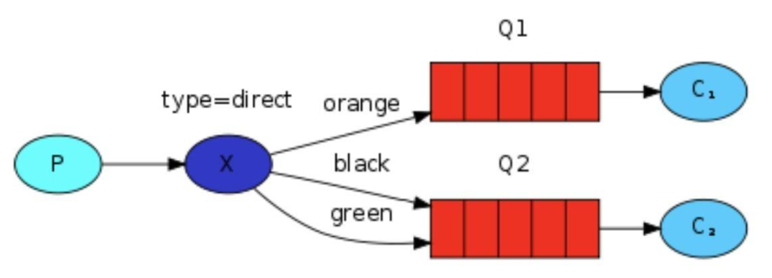
在上面这张图中，我们可以看到 X 绑定了两个队列，绑定类型是 direct。队列 Q1 绑定键为 orange ，队列 Q2 绑定键有两个:一个绑定键为 black，另一个绑定键为 green. 在这种绑定情况下，生产者发布消息到 exchange 上，绑定键为 orange 的消息会被发布到队列Q1。绑定键为 blackgreen 和的消息会被发布到队列 Q2，其他消息类型的消息将被丢弃。
多重绑定:
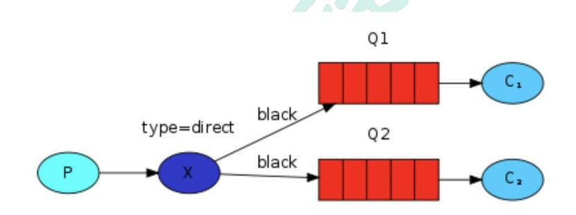
当然如果 exchange 的绑定类型是direct，但是它绑定的多个队列的 key 如果都相同，在这种情况下虽然绑定类型是 direct 但是它表现的就和 fanout 有点类似了，就跟广播差不多，如上图所示。
实现: 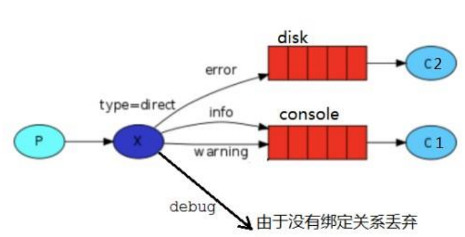
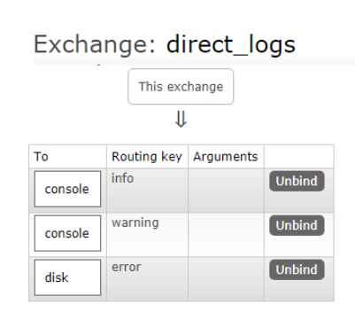
EmitLogDirect
1 2 3 4 5 6 7 8 9 10 11 12 13 14 15 16 17 18 19 20 21 22 23 public class EmitLogDirect { private static final String EXCHANGE_NAME = "direct_logs" ; public static void main (String[] argv) throws Exception { Channel channel = RabbitMqUtils.getChannel(); channel.exchangeDeclare(EXCHANGE_NAME, BuiltinExchangeType.DIRECT); Map<String, String> bindingKeyMap = new HashMap <>(); bindingKeyMap.put("info" , " 普通 info 信息" ); bindingKeyMap.put("warning" , " 警告 warning 信息" ); bindingKeyMap.put("error" , " 错误 error 信息" ); bindingKeyMap.put("debug" , " 调试 debug 信息" ); for (Map.Entry<String,String>bindingKeyEntry : bindingKeyMap.entrySet()) { String bindingKey = bindingKeyEntry.getKey(); String message = bindingKeyEntry.getValue(); channel.basicPublish(EXCHANGE_NAME, bindingKey, null , message.getBytes("UTF-8" )); System.out.println(" 生产者发出消息:" + message); } } }
ReceiveLogsDirect01
1 2 3 4 5 6 7 8 9 10 11 12 13 14 15 16 17 18 19 20 public class ReceiveLogsDirect01 { private static final String EXCHANGE_NAME = "direct_logs" ; public static void main (String[] argv) throws Exception { Channel channel = RabbitMqUtils.getChannel(); channel.exchangeDeclare(EXCHANGE_NAME, BuiltinExchangeType.DIRECT); String queueName = "disk" ; channel.queueDeclare(queueName, false , false , false , null ); channel.queueBind(queueName, EXCHANGE_NAME, "error" ); System.out.println("R1等待接收消息 ........... " ); DeliverCallback deliverCallback = (consumerTag, delivery) -> { String message = new String (delivery.getBody(), "UTF-8" ); message = " 接收绑定键:" + delivery.getEnvelope().getRoutingKey() + ", 消息:" + message; System.out.println(message); }; channel.basicConsume(queueName, true , deliverCallback, consumerTag -> { }); } }
ReceiveLogsDirect02
1 2 3 4 5 6 7 8 9 10 11 12 13 14 15 16 17 18 19 20 public class ReceiveLogsDirect02 { private static final String EXCHANGE_NAME = "direct_logs" ; public static void main (String[] argv) throws Exception { Channel channel = RabbitMqUtils.getChannel(); channel.exchangeDeclare(EXCHANGE_NAME, BuiltinExchangeType.DIRECT); String queueName = "console" ; channel.queueDeclare(queueName, false , false , false , null ); channel.queueBind(queueName, EXCHANGE_NAME, "info" ); channel.queueBind(queueName, EXCHANGE_NAME, "warning" ); System.out.println("R2等待接收消息 ........... " ); DeliverCallback deliverCallback = (consumerTag, delivery) -> { String message = new String (delivery.getBody(), "UTF-8" ); System.out.println(" 接收绑定键 :" + delivery.getEnvelope().getRoutingKey() + ", 消息:" + message); }; channel.basicConsume(queueName, true , deliverCallback, consumerTag -> { }); } }
Topic Exchange 案例 下图绑定关系如下:
Q1–>绑定的是: 中间带 orange 带 3 个单词的字符串(.orange. )
Q2–>绑定的是: 最后一个单词是 rabbit 的 3 个单词(. .rabbit), 第一个单词是 lazy 的多个单词(lazy.#)
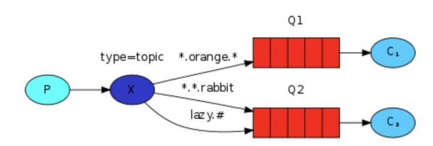
上图是一个队列绑定关系图，我们来看看他们之间数据接收情况如下:
quick.orange.rabbit 被队列 Q1Q2 接收到
lazy.orange.elephant 被队列 Q1Q2 接收到
quick.orange.fox 被队列 Q1 接收到
lazy.brown.fox 被队列 Q2 接收到
lazy.pink.rabbit 虽然满足两个绑定但只被队列 Q2 接收一次
quick.brown.fox 不匹配任何绑定不会被任何队列接收到会被丢弃
quick.orange.male.rabbit 是四个单词不匹配任何绑定会被丢弃
lazy.orange.male.rabbit 是四个单词但匹配 Q2
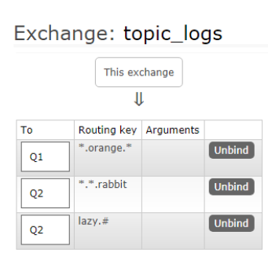
ReceiveLogsTopic01
1 2 3 4 5 6 7 8 9 10 11 12 13 14 15 16 17 18 19 20 public class ReceiveLogsTopic01 { private static final String EXCHANGE_NAME = "topic_logs" ; public static void main (String[] argv) throws Exception { Channel channel = RabbitMqUtils.getChannel(); channel.exchangeDeclare(EXCHANGE_NAME, "topic" ); String queueName = "Q1" ; channel.queueDeclare(queueName, false , false , false , null ); channel.queueBind(queueName, EXCHANGE_NAME, "*.orange.*" ); System.out.println("R2等待接收消息... " ); DeliverCallback deliverCallback = (consumerTag, delivery) -> { String message = new String (delivery.getBody(), "UTF-8" ); System.out.println(" 接收队列: " + queueName + " 绑定键:" +delivery.getEnvelope().getRoutingKey()+", 消息:" +message); }; channel.basicConsume(queueName, true , deliverCallback, consumerTag -> { }); } }
ReceiveLogsTopic02
1 2 3 4 5 6 7 8 9 10 11 12 13 14 15 16 17 18 19 20 21 public class ReceiveLogsTopic02 { private static final String EXCHANGE_NAME = "topic_logs" ; public static void main (String[] argv) throws Exception { Channel channel = RabbitMqUtils.getChannel(); channel.exchangeDeclare(EXCHANGE_NAME, "topic" ); String queueName = "Q2" ; channel.queueDeclare(queueName, false , false , false , null ); channel.queueBind(queueName, EXCHANGE_NAME, "*.*.rabbit" ); channel.queueBind(queueName, EXCHANGE_NAME, "lazy.#" ); System.out.println("R2等待接收消息... " ); DeliverCallback deliverCallback = (consumerTag, delivery) -> { String message = new String (delivery.getBody(), "UTF-8" ); System.out.println(" 接收队列: " + queueName + "绑定键:" +delivery.getEnvelope().getRoutingKey()+", 消息:" +message); }; channel.basicConsume(queueName, true , deliverCallback, consumerTag -> { }); } }
EmitLogTopic
1 2 3 4 5 6 7 8 9 10 11 12 13 14 15 16 17 18 19 20 21 22 23 24 25 26 27 28 29 30 31 32 33 34 35 public class EmitLogTopic { private static final String EXCHANGE_NAME = "topic_logs" ; public static void main (String[] argv) throws Exception { try (Channel channel = RabbitMqUtils.getChannel()) { channel.exchangeDeclare(EXCHANGE_NAME, "topic" ); Map<String, String> bindingKeyMap = new HashMap <>(); bindingKeyMap.put("quick.orange.rabbit" , " 被队列 Q1Q2 接收到" ); bindingKeyMap.put("lazy.orange.elephant" , " 被队列 Q1Q2 接收到" ); bindingKeyMap.put("quick.orange.fox" , " 被队列 Q1 接收到" ); bindingKeyMap.put("lazy.brown.fox" , " 被队列 Q2 接收到" ); bindingKeyMap.put("lazy.pink.rabbit" , " 虽然满足两个绑定但只被队列 Q2 接收一次 " ); bindingKeyMap.put("quick.brown.fox" , " 不匹配任何绑定不会被任何队列接收到会被丢弃" ); bindingKeyMap.put("quick.orange.male.rabbit" , " 是四个单词不匹配任何绑定会被丢弃" ); bindingKeyMap.put("lazy.orange.male.rabbit" , " 是四个单词但匹配 Q2" ); for (Map.Entry<String, String> bindingKeyEntry : bindingKeyMap.entrySet()) { String bindingKey = bindingKeyEntry.getKey(); String message = bindingKeyEntry.getValue(); channel.basicPublish(EXCHANGE_NAME, bindingKey, null , message.getBytes("UTF-8" )); System.out.println(" 生产者发出消息" + message); } } } }
死信队列 死信，顾名思义就是无法被消费的消息 ，字面意思可以这样理解，一般来说，producer 将消息投递到 broker 或者直接到queue 里了，consumer 从 queue 取出消息进行消费，但某些时候由于特定的原因导致 queue 中的某些消息无法被消费，这样的消息如果没有 后续的处理，就变成了死信，有死信自然就有了死信队列。 死信的主要来源有如下几个:
消息 TTL(有效期) 过期 队列达到最大长度(队列满了，无法再添加数据到 mq 中) 消息被拒绝(basic.reject 或 basic.nack)并且 requeue=false.
应用场景:为了保证订单业务的消息数据不丢失，需要使用到 RabbitMQ 的死信队列机制，当消息消费发生异常时，将消息投入死信队列中.还有比如说: 用户在商城下单成功并点击去支付后在指定时间未支付时自动失效
下面将通过一个案例来演示
案例架构图:
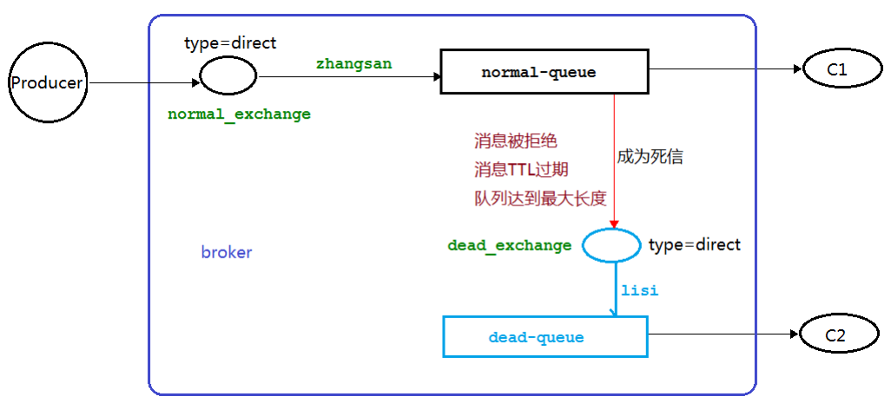
消息 TTL 过期 生产者代码
设置消息的 TTL (过期时间):
AMQP.BasicProperties properties = new AMQP.BasicProperties().builder().expiration("10000").build();
channel.basicPublish(NORMAL_EXCHANGE, "zhangsan", properties, message.getBytes());
1 2 3 4 5 6 7 8 9 10 11 12 13 14 15 16 public class Producer { private static final String NORMAL_EXCHANGE = "normal_exchange" ; public static void main (String[] argv) throws Exception { Channel channel = RabbitMqUtils.getChannel(); channel.exchangeDeclare(NORMAL_EXCHANGE, BuiltinExchangeType.DIRECT); AMQP.BasicProperties properties = new AMQP .BasicProperties().builder().expiration("10000" ).build(); for (int i = 1 ; i < 11 ; i++) { String message = "info" + i; channel.basicPublish(NORMAL_EXCHANGE, "zhangsan" , properties, message.getBytes()); System.out.println(" 生产者发送消息:" + message); } } }
消费者 C1 代码 ( 启动之后关闭该消费者 模拟其接收不到消息 )
给普通队列绑定消息死信队列和死信交换机
Map<String, Object> params = new HashMap<>();
params.put("x-dead-letter-exchange", DEAD_EXCHANGE);
params.put("x-dead-letter-routing-key", "lisi");
channel.queueDeclare("normalQueue", false, false, false, params);
channel.queueBind(normalQueue, NORMAL_EXCHANGE, "zhangsan");
1 2 3 4 5 6 7 8 9 10 11 12 13 14 15 16 17 18 19 20 21 22 23 24 25 26 27 28 29 30 31 32 33 34 public class Consumer01 { private static final String NORMAL_EXCHANGE = "normal_exchange" ; private static final String DEAD_EXCHANGE = "dead_exchange" ; public static void main (String[] argv) throws Exception { Channel channel = RabbitMqUtils.getChannel(); channel.exchangeDeclare(NORMAL_EXCHANGE, BuiltinExchangeType.DIRECT); channel.exchangeDeclare(DEAD_EXCHANGE, BuiltinExchangeType.DIRECT); String deadQueue = "dead-queue" ; channel.queueDeclare(deadQueue, false , false , false , null ); channel.queueBind(deadQueue, DEAD_EXCHANGE, "lisi" ); Map<String, Object> params = new HashMap <>(); params.put("x-dead-letter-exchange" , DEAD_EXCHANGE); params.put("x-dead-letter-routing-key" , "lisi" ); String normalQueue = "normal-queue" ; channel.queueDeclare(normalQueue, false , false , false , params); channel.queueBind(normalQueue, NORMAL_EXCHANGE, "zhangsan" ); System.out.println(" 等待接收消息 ........... " ); DeliverCallback deliverCallback = (consumerTag, delivery) -> { String message = new String (delivery.getBody(), "UTF-8" ); System.out.println("Consumer01 接收到消息" + message); }; channel.basicConsume(normalQueue, true , deliverCallback, consumerTag -> { }); } }
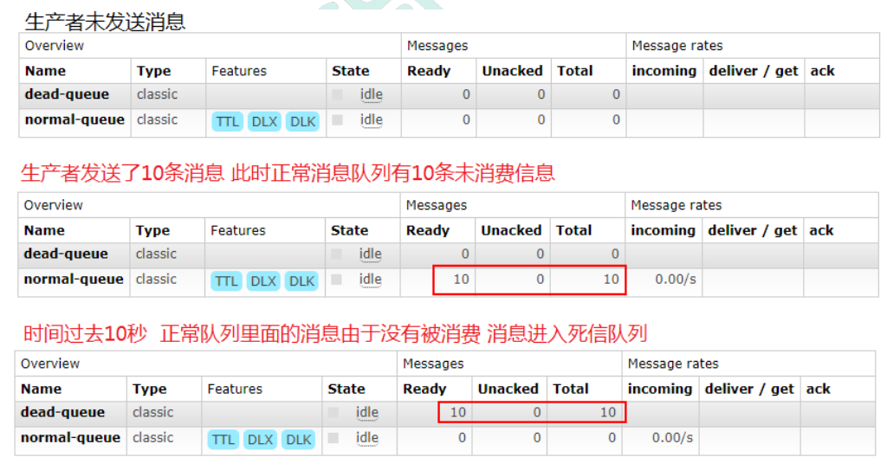
消费者 C2 代码 ( 以上步骤完成后 启动 C2 消费者 它消费死信队列里面的消息 )
1 2 3 4 5 6 7 8 9 10 11 12 13 14 15 16 17 18 public class Consumer02 { private static final String DEAD_EXCHANGE = "dead_exchange" ; public static void main (String[] argv) throws Exception { Channel channel = RabbitMqUtils.getChannel(); channel.exchangeDeclare(DEAD_EXCHANGE, BuiltinExchangeType.DIRECT); String deadQueue = "dead-queue" ; channel.queueDeclare(deadQueue, false , false , false , null ); channel.queueBind(deadQueue, DEAD_EXCHANGE, "lisi" ); System.out.println(" 等待接收死信队列消息 ........... " ); DeliverCallback deliverCallback = (consumerTag, delivery) ->{ String message = new String (delivery.getBody(), "UTF-8" ); System.out.println("Consumer02 接收死信队列的消息 " + message); }; channel.basicConsume(deadQueue, true , deliverCallback, consumerTag -> { }); } }
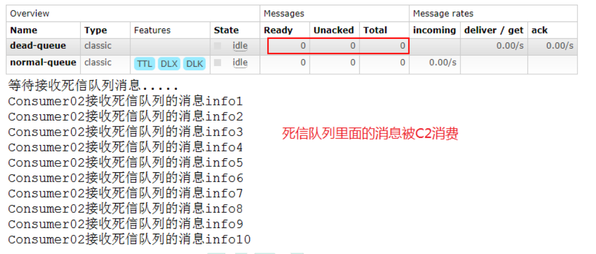
队列达到最大长度 1.消息生产者代码去掉 TTL 属性
1 2 3 4 5 6 7 8 9 10 11 12 13 public class Producer { private static final String NORMAL_EXCHANGE = "normal_exchange" ; public static void main (String[] argv) throws Exception { Channel channel = RabbitMqUtils.getChannel(); channel.exchangeDeclare(NORMAL_EXCHANGE, BuiltinExchangeType.DIRECT); for (int i = 1 ; i <11 ; i++) { String message="info" +i; channel.basicPublish(NORMAL_EXCHANGE,"zhangsan" ,null , message.getBytes()); System.out.println(" 生产者发送消息:" +message); } } }
C1 消费者修改以下代码 ( 启动之后关闭该消费者 模拟其接收不到消息 )
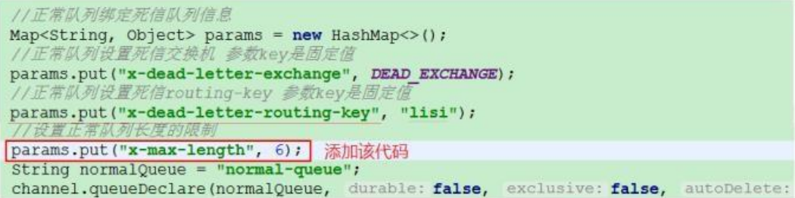
注意此时需要把原先队列删除 因为参数改变了
3.C2 消费者代码不变( 启动 C2 消费者)
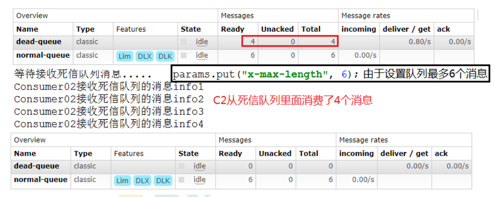
消息被拒
消息生产者代码同上生产者一致
C1 消费者代码( 启动之后关闭该消费者 模拟其接收不到消息 )
1 2 3 4 5 6 7 8 9 10 11 12 13 14 15 16 17 18 19 20 21 22 23 24 25 26 27 28 29 30 31 32 33 34 35 36 37 38 39 40 public class Consumer01 { private static final String NORMAL_EXCHANGE = "normal_exchange" ; private static final String DEAD_EXCHANGE = "dead_exchange" ; public static void main (String[] argv) throws Exception { Channel channel = RabbitUtils.getChannel(); channel.exchangeDeclare(NORMAL_EXCHANGE, BuiltinExchangeType.DIRECT); channel.exchangeDeclare(DEAD_EXCHANGE, BuiltinExchangeType.DIRECT); String deadQueue = "dead-queue" ; channel.queueDeclare(deadQueue, false , false , false , null ); channel.queueBind(deadQueue, DEAD_EXCHANGE, "lisi" ); Map<String, Object> params = new HashMap <>(); params.put("x-dead-letter-exchange" , DEAD_EXCHANGE); params.put("x-dead-letter-routing-key" , "lisi" ); String normalQueue = "normal-queue" ; channel.queueDeclare(normalQueue, false , false , false , params); channel.queueBind(normalQueue, NORMAL_EXCHANGE, "zhangsan" ); System.out.println(" 等待接收消息 ........... " ); DeliverCallback deliverCallback = (consumerTag, delivery) ->{ String message = new String (delivery.getBody(), "UTF-8" ); if (message.equals("info5" )){ System.out.println("Consumer01 接收到消息 " + message + " 并拒绝签收该消息 " ); channel.basicReject(delivery.getEnvelope().getDeliveryTag(), false ); }else { System.out.println("Consumer01 接收到消息 " +message); channel.basicAck(delivery.getEnvelope().getDeliveryTag(), false ); } }; boolean autoAck = false ; channel.basicConsume(normalQueue, autoAck, deliverCallback, consumerTag -> {}); } }
C2 消费者代码不变
启动消费者 1 , 1 然后再启动消费者 2
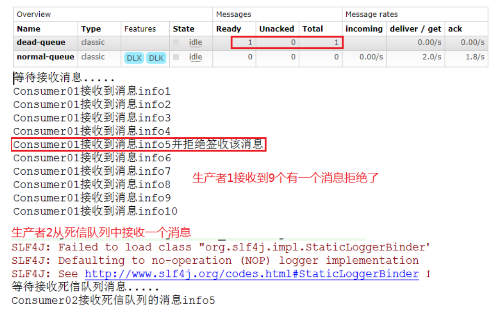
延迟队列 延时队列,队列内部是有序的，最重要的特性就体现在它的延时属性上，延时队列中的元素是希望在指定时间到了以后或之前取出和处理，简单来说，延时队列就是用来存放需要在指定时间被处理的元素的队列
延迟队列使用场景:
订单在十分钟之内未支付则自动取消
新创建的店铺，如果在十天内都没有上传过商品，则自动发送消息提醒。
用户注册成功后，如果三天内没有登陆则进行短信提醒。
用户发起退款，如果三天内没有得到处理则通知相关运营人员。
预定会议后，需要在预定的时间点前十分钟通知各个与会人员参加会议
这些场景都有一个特点，需要在某个事件发生之后或者之前的指定时间点完成某一项任务，如： 发生订单生成事件，在十分钟之后检查该订单支付状态，然后将未支付的订单进行关闭；看起来似乎使用定时任务，一直轮询数据，每秒查一次，取出需要被处理的数据，然后处理不就完事了吗？如果数据量比较少，确实可以这样做，比如：对于“如果账单一周内未支付则进行自动结算”这样的需求，
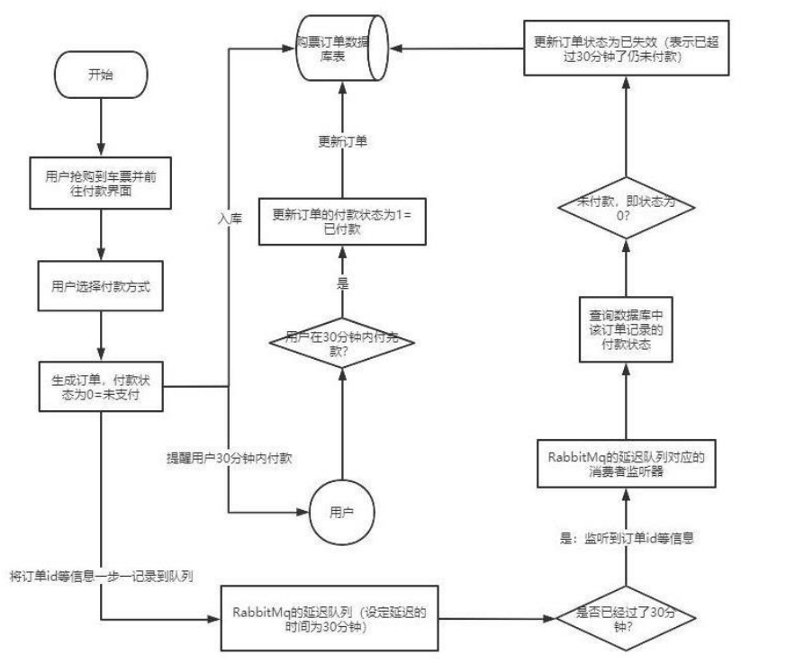
RabbitMQ 中的 TTL TTL 是什么呢？TTL 是 RabbitMQ 中一个消息或者队列的属性，表明一条消息或者该队列中的所有消息的最大存活时间，单位是毫秒 。换句话说，如果一条消息设置了 TTL 属性或者进入了设置TTL 属性的队列，那么这条消息如果在TTL 设置的时间内没有被消费，则会成为”死信”。如果同时配置了队列的TTL 和消息的TTL，那么较小的那个值将会被使用，有两种方式设置 TTL。
消息设置TTL 针对每条消息设置TTL
1 2 3 4 rabbitTemplate.convertAndsend(exchange:"X" ,routingKey:"Xc" ,message,correlationData ->{ correlationData.getMessageproperties().setExpiration(ttlTime); return correlationData; })；
队列设置TTL 第一种是在创建队列的时候设置队列的“x-message-ttl”属性
1 2 3 args.put ( "x-message-ttl" , 5000 ); return QueueBuilder.durable(QUEUE_A).withArguments (args).build();
两者的区别
如果设置了队列的 TTL 属性，那么一旦消息过期，就会被队列丢弃(如果配置了死信队列被丢到死信队列中)，而第二种方式，消息即使过期，也不一定会被马上丢弃，因为消息是否过期是在即将投递到消费者之前判定的，如果当前队列有严重的消息积压情况，则已过期的消息也许还能存活较长时间；另外，还需要注意的一点是，如果不设置 TTL，表示消息永远不会过期，如果将 TTL 设置为 0，则表示除非此时可以直接投递该消息到消费者，否则该消息将会被丢弃。
整合SpringBoot 依赖 :
1 2 3 4 5 6 7 8 9 10 11 12 13 14 15 16 17 18 19 20 21 22 23 24 25 26 <dependencies > <dependency > <groupId > org.springframework.boot</groupId > <artifactId > spring-boot-starter-amqp</artifactId > </dependency > <dependency > <groupId > org.springframework.boot</groupId > <artifactId > spring-boot-starter-web</artifactId > </dependency > <dependency > <groupId > org.springframework.boot</groupId > <artifactId > spring-boot-starter-test</artifactId > <scope > test</scope > </dependency > <dependency > <dependency > <groupId > org.springframework.amqp</groupId > <artifactId > spring-rabbit-test</artifactId > <scope > test</scope > </dependency > </dependencies >
修改配置文件 1 2 3 4 spring.rabbitmq.host =127.0.0.1 spring.rabbitmq.port =5672 spring.rabbitmq.username =admin spring.rabbitmq.password =123
添加 Swagger 配置类 1 2 3 4 5 6 7 8 9 10 11 12 13 14 15 16 17 18 19 20 @Configuration @EnableSwagger2 public class SwaggerConfig { @Bean public Docket webApiConfig () { return new Docket (DocumentationType.SWAGGER_2) .groupName("webApi" ) .apiInfo(webApiInfo()) .select() .build(); } private ApiInfo webApiInfo () { return new ApiInfoBuilder () .title("rabbitmq 接口文档" ) .description(" 本文档描述了 rabbitmq 微服务接口定义" ) .version("1.0" ) .contact(new Contact ("enjoy6288" , "http://atguigu.com" , "1551388580@qq.com" )) .build(); } }
队列 TTL 1 2 3 4 5 6 7 8 9 10 11 12 13 14 15 16 17 18 19 20 21 22 23 24 25 26 27 28 29 30 31 32 33 34 35 36 37 38 39 40 41 42 43 44 45 46 47 48 49 50 51 52 53 54 55 56 57 58 59 60 61 62 63 64 65 @Configuration public class TtlQueueConfig {public static final String X_EXCHANGE = "X" ;public static final String QUEUE_A = "QA" ;public static final String QUEUE_B = "QB" ;public static final String Y_DEAD_LETTER_EXCHANGE = "Y" ;public static final String DEAD_LETTER_QUEUE = "QD" ; @Bean("xExchange") public DirectExchange xExchange () { return new DirectExchange (X_EXCHANGE); } @Bean("yExchange") public DirectExchange yExchange () { return new DirectExchange (Y_DEAD_LETTER_EXCHANGE); } @Bean("queueA") public Queue queueA () { Map<String, Object> args = new HashMap <>(3 ); args.put("x-dead-letter-exchange" , Y_DEAD_LETTER_EXCHANGE); args.put("x-dead-letter-routing-key" , "YD" ); args.put("x-message-ttl" , 10000 ); return QueueBuilder.durable(QUEUE_A).withArguments(args).build(); } @Bean public Binding queueaBindingX (@Qualifier("queueA") Queue queueA, @Qualifier("xExchange") DirectExchange xExchange) { return BindingBuilder.bind(queueA).to(xExchange).with("XA" ); } @Bean("queueB") public Queue queueB () { Map<String, Object> args = new HashMap <>(3 ); args.put("x-dead-letter-exchange" , Y_DEAD_LETTER_EXCHANGE); args.put("x-dead-letter-routing-key" , "YD" ); args.put("x-message-ttl" , 40000 ); return QueueBuilder.durable(QUEUE_B).withArguments(args).build(); } @Bean public Binding queuebBindingX (@Qualifier("queueB") Queue queue1B, @Qualifier("xExchange") DirectExchange xExchange) { return BindingBuilder.bind(queue1B).to(xExchange).with("XB" ); } @Bean("queueD") public Queue queueD () { return new Queue (DEAD_LETTER_QUEUE); } @Bean public Binding deadLetterBindingQAD (@Qualifier("queueD") Queue queueD, @Qualifier("yExchange") DirectExchange yExchange) { return BindingBuilder.bind(queueD).to(yExchange).with("YD" ); } }
消息生产者代码: 1 2 3 4 5 6 7 8 9 10 11 12 13 @Slf4j @RequestMapping("ttl") @RestController public class SendMsgController { @Autowired private RabbitTemplate rabbitTemplate; @GetMapping("sendMsg/{message}") public void sendMsg (@PathVariable String message) { log.info(" 当前时间： {}, 发送一条信息给两个 TTL 队列 :{}" , new Date (), message); rabbitTemplate.convertAndSend("X" , "XA" , " 消息来自 ttl 为 10S 的队列 : " +message); rabbitTemplate.convertAndSend("X" , "XB" , " 消息来自 ttl 为 40S 的队列: " +message); } }
消息消费者代码: 1 2 3 4 5 6 7 8 9 @Slf4j @Component public class DeadLetterQueueConsumer { @RabbitListener(queues = "QD") public void receiveD (Message message, Channel channel) throws IOException{ String msg = new String (message.getBody()); log.info(" 当前时间：{}, 收到死信队列信息{}" , new Date ().toString(), msg); } }
发起一个请求 http://localhost:8080/ttl/sendMsg/嘻嘻嘻
第一条消息在 10S 后变成了死信消息，然后被消费者消费掉，第二条消息在 40S 之后变成了死信消息，然后被消费掉，这样一个延时队列就打造完成了。每增加一个新的时间需求，就要新增一个队列 ，这里只有 10S 和 40S两个时间选项，如果需要一个小时后处理，那么就需要增加TTL 为一个小时的队列，如果是预定会议室然后提前通知这样的场景，岂不是要增加无数个队列才能满足需求？
延时队列优化 代码架构图 在这里新增了一个队列 QC,绑定关系如下,该队列不设置TTL 时间
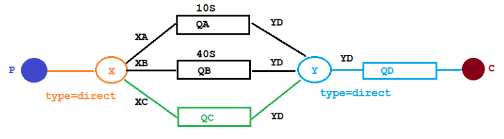
配置文件类代码 1 2 3 4 5 6 7 8 9 10 11 12 13 14 15 16 17 18 19 20 21 22 23 @Component public class MsgTtlQueueConfig { public static final String Y_DEAD_LETTER_EXCHANGE = "Y" ; public static final String QUEUE_C = "QC" ; @Bean("queueC") public Queue queueB () { Map<String, Object> args = new HashMap <>(3 ); args.put("x-dead-letter-exchange" , Y_DEAD_LETTER_EXCHANGE); args.put("x-dead-letter-routing-key" , "YD" ); return QueueBuilder.durable(QUEUE_C).withArguments(args).build(); } @Bean public Binding queuecBindingX (@Qualifier("queueC") Queue queueC, @Qualifier("xExchange") DirectExchange xExchange) { return BindingBuilder.bind(queueC).to(xExchange).with("XC" ); } }
消息生产者代码 1 2 3 4 5 6 7 @GetMapping("sendExpirationMsg/{message}/{ttlTime}") public void sendMsg (@PathVariable String message,@PathVariable String ttlTime) { rabbitTemplate.convertAndSend("X" , "XC" , message, correlationData ->{ correlationData.getMessageProperties().setExpiration(ttlTime); return correlationData; }); log.info(" 当前时间：{}, 发送一条时长{} 毫秒 TTL 信息给队列 C:{}" , new Date (),ttlTime, message); }
发起请求:
http://localhost:8080/ttl/sendExpirationMsg/你好 1/20000
http://localhost:8080/ttl/sendExpirationMsg/你好 2/2000
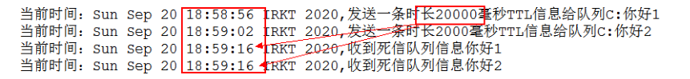
看起来似乎没什么问题，但是在最开始的时候，就介绍过如果使用在消息属性上设置 TTL 的方式，消息可能并不会按时“死亡“，因为 RabbitMQ 只会检查第一个消息是否过期 ，如果过期则丢到死信队列，如果第一个消息的延时时长很长，而第二个消息的延时时长很短，第二个消息并不会优先得到执行。
Rabbitmq 插件实现延迟队列 上文中提到的问题，确实是一个问题，如果不能实现在消息粒度上的 TTL，并使其在设置的TTL 时间及时死亡，就无法设计成一个通用的延时队列。那如何解决呢，接下来我们就去解决该问题。
安装延时队列插件 在官网上下载 https://www.rabbitmq.com/community-plugins.html，**下载rabbitmq_delayed_message_exchange 插件**，然后解压放置到 RabbitMQ 的插件目录。进入 RabbitMQ 的安装目录下的 plgins 目录，执行下面命令让该插件生效，然后重启 RabbitMQ
1 2 /usr/lib/rabbitmq/lib/rabbitmq_server-3.8.8/plugins rabbitmq-plugins enable rabbitmq_delayed_message_exchange
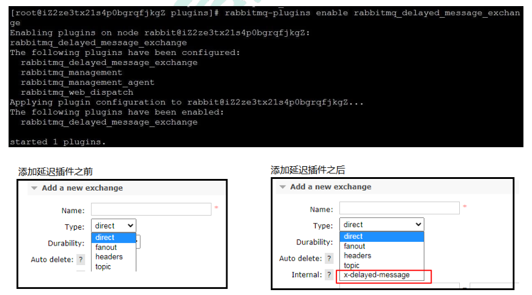
代码架构图 在这里新增了一个队列delayed.queue,一个自定义交换机 delayed.exchange，绑定关系如下:
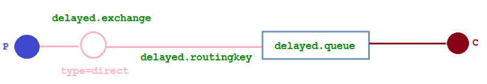
配置文件类代码 在我们自定义的交换机中，这是一种新的交换类型，该类型消息支持延迟投递机制 消息传递后并不会立即投递到目标队列中，而是存储在 mnesia(一个分布式数据系统)表中，当达到投递时间时，才投递到目标队列中。
1 2 3 4 5 6 7 8 9 10 11 12 13 14 15 16 17 18 19 20 21 22 23 @Configuration public class DelayedQueueConfig {public static final String DELAYED_QUEUE_NAME = "delayed.queue" ;public static final String DELAYED_EXCHANGE_NAME = "delayed.exchange" ;public static final String DELAYED_ROUTING_KEY = "delayed.routingkey" ; @Bean public Queue delayedQueue () { return new Queue (DELAYED_QUEUE_NAME); } @Bean public CustomExchange delayedExchange () { Map<String, Object> args = new HashMap <>(); args.put("x-delayed-type" , "direct" ); return new CustomExchange (DELAYED_EXCHANGE_NAME, "x-delayed-message" , true , false , args); } @Bean public Binding bindingDelayedQueue (@Qualifier("delayedQueue") Queue queue, @Qualifier("delayedExchange") CustomExchange delayedExchange) { return BindingBuilder.bind(queue).to(delayedExchange).with(DELAYED_ROUTING_KEY).noargs(); } }
消息生产者代码 1 2 3 4 5 6 7 8 9 10 11 12 public static final String DELAYED_EXCHANGE_NAME = "delayed.exchange" ;public static final String DELAYED_ROUTING_KEY = "delayed.routingkey" ; @GetMapping("sendDelayMsg/{message}/{delayTime}") public void sendMsg (@PathVariable String message,@PathVariable Integer delayTime) { rabbitTemplate.convertAndSend(DELAYED_EXCHANGE_NAME, DELAYED_ROUTING_KEY, message, correlationData ->{ correlationData.getMessageProperties().setDelay(delayTime); return correlationData; }); log.info(" 当 前 时 间 ： {}, 发 送 一 条 延 迟 {} 毫 秒 的 信 息 给 队 列 delayed.queue:{}" , new Date (),delayTime, message); }
消息消费者代码 1 2 3 4 5 6 public static final String DELAYED_QUEUE_NAME = "delayed.queue" ;@RabbitListener(queues = DELAYED_QUEUE_NAME) public void receiveDelayedQueue (Message message) { String msg = new String (message.getBody()); log.info(" 当前时间：{}, 收到延时队列的消息：{}" , new Date ().toString(), msg); }
发起请求：
http://localhost:8080/ttl/sendDelayMsg/come on baby1/20000
http://localhost:8080/ttl/sendDelayMsg/come on baby2/2000
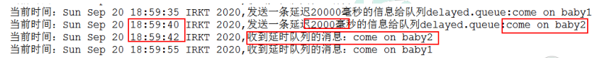
第二个消息被先消费掉了，符合预期
总结 延时队列在需要延时处理的场景下非常有用，使用 RabbitMQ 来实现延时队列可以很好的利用RabbitMQ 的特性，如：消息可靠发送、消息可靠投递、死信队列来保障消息至少被消费一次以及未被正确处理的消息不会被丢弃。另外，通过 RabbitMQ 集群的特性，可以很好的解决单点故障问题，不会因为单个节点挂掉导致延时队列不可用或者消息丢失。 Java 的 DelayQueue ，利用 Redis 的 zset ，利用 Quartz或者利用 kafka 的时间轮，这些方式各有特点,看需要适用的场景
发布确认高级 在生产环境中由于一些不明原因，导致 rabbitmq 重启，在 RabbitMQ 重启期间生产者消息投递失败，导致消息丢失，需要手动处理和恢复 。于是，我们开始思考，如何才能进行 RabbitMQ 的消息可靠投递呢？ 特别是在这样比较极端的情况，RabbitMQ 集群不可用的时候，无法投递的消息该如何处理呢:
发布确认SpringBoot实现 确认机制方案 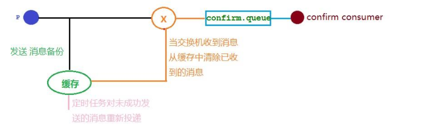
代码架构图 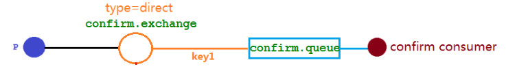
配置文件 在配置文件application.properties当中需要添加:
1 spring.rabbitmq.publisher-confirm-type =correlated
NONE : 禁用发布确认模式，是默认值CORRELATED: 发布消息成功到交换器后会触发回调方法SIMPLE:
经测试有两种效果，其一效果和 CORRELATED 值一样会触发回调方法，
其二在发布消息成功后使用 rabbitTemplate 调用 waitForConfirms 或 waitForConfirmsOrDie 方法等待 broker 节点返回发送结果，根据返回结果来判定下一步的逻辑，要注意的点是waitForConfirmsOrDie 方法如果返回 false 则会关闭 channel，则接下来无法发送消息到 broker
1 2 3 4 5 spring.rabbitmq.host =182.92.234.71 spring.rabbitmq.port =5672 spring.rabbitmq.username =admin spring.rabbitmq.password =123 spring.rabbitmq.publisher-confirm-type =correlated
添加配置类 1 2 3 4 5 6 7 8 9 10 11 12 13 14 15 16 17 18 19 20 21 @Configuration public class ConfirmConfig { public static final String CONFIRM_EXCHANGE_NAME = "confirm.exchange" ; public static final String CONFIRM_QUEUE_NAME = "confirm.queue" ; @Bean("confirmExchange") public DirectExchange confirmExchange () { return new DirectExchange (CONFIRM_EXCHANGE_NAME); } @Bean("confirmQueue") public Queue confirmQueue () { return QueueBuilder.durable(CONFIRM_QUEUE_NAME).build(); } @Bean public Binding queueBinding (@Qualifier("confirmQueue") Queue queue, @Qualifier("confirmExchange") DirectExchange exchange) { return BindingBuilder.bind(queue).to(exchange).with("key1" ); } }
消息生产者 1 2 3 4 5 6 7 8 9 10 11 12 13 14 15 16 17 18 19 20 21 22 23 24 25 26 27 28 29 @RestController @RequestMapping("/confirm") @Slf4j public class Producer { public static final String CONFIRM_EXCHANGE_NAME = "confirm.exchange" ; @Autowired private RabbitTemplate rabbitTemplate; @Autowired private MyCallBack myCallBack; @PostConstruct public void init () { rabbitTemplate.setConfirmCallback(myCallBack); } @GetMapping("sendMessage/{message}") public void sendMessage (@PathVariable String message) { CorrelationData correlationData1=new CorrelationData ("1" ); String routingKey="key1" ; rabbitTemplate.convertAndSend(CONFIRM_EXCHANGE_NAME,routingKey, message+routingKey,correlationData1); CorrelationData correlationData2=new CorrelationData ("2" ); routingKey="key2" ; rabbitTemplate.convertAndSend(CONFIRM_EXCHANGE_NAME,routingKey, message+routingKey,correlationData2); log.info(" 发送消息内容:{}" ,message); } }
回调接口 1 2 3 4 5 6 7 8 9 10 11 12 13 14 15 16 17 18 19 20 @Component @Slf4j public class MyCallBack implements RabbitTemplate .ConfirmCallback { @Override public void confirm (CorrelationData correlationData, boolean ack, String cause) { String id=correlationData!=null ?correlationData.getId():"" ; if (ack){ log.info(" 交换机已经收到 id 为 :{} 的消息 " ,id); }else { log.info(" 交换机还未收到 id 为 :{} 消息 , 由于原因 :{}" ,id,cause); } } }
消息消费者 1 2 3 4 5 6 7 8 9 10 @Component @Slf4j public class ConfirmConsumer { public static final String CONFIRM_QUEUE_NAME = "confirm.queue" ; @RabbitListener(queues =CONFIRM_QUEUE_NAME) public void receiveMsg (Message message) { String msg=new String (message.getBody()); log.info(" 接受到队列 confirm.queue 消息:{}" ,msg); } }
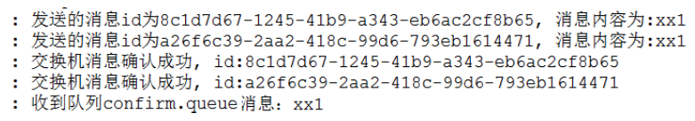
可以看到，发送了两条消息，第一条消息的 RoutingKey 为 “key1”，第二条消息的 RoutingKey 为”key2”，两条消息都成功被交换机接收，也收到了交换机的确认回调，但消费者只收到了一条消息，因为第二条消息的 RoutingKey 与队列的 BindingKey 不一致，也没有其它队列能接收这个消息，所有第二条消息被直接丢弃了。
回退消息 Mandatory 参数 在仅开启了生产者确认机制的情况下，交换机接收到消息后，会直接给消息生产者发送确认消息，如果发现该消息不可路由，那么消息会被直接丢弃，此时生产者是不知道消息被丢弃这个事件的。 那么如何让无法被路由的消息帮我想办法处理一下？最起码通知我一声，我好自己处理啊。通过设置 mandatory 参数可以在当消息传递过程中不可达目的地时将消息返回给生产者 。
消息生产者代码 1 2 3 4 5 6 7 8 9 10 11 12 13 14 15 16 17 18 19 20 21 22 23 24 25 26 27 28 29 30 31 32 33 34 35 36 37 @Slf4j @RestController public class MessageProducer { @Autowired private RabbitTemplate rabbitTemplate; @Autowired private MyReturnCallBack myCallBack; @PostConstruct private void init () { rabbitTemplate.setConfirmCallback(myCallBack); rabbitTemplate.setMandatory(true ); rabbitTemplate.setReturnCallback(myCallBack); } @GetMapping("/sendMessage/{message}") public void sendMessage (@PathVariable String message) { CorrelationData correlationData1 = new CorrelationData (UUID.randomUUID().toString()); rabbitTemplate.convertAndSend("confirm.exchange" , "key1" , message + "key1" , correlationData1); log.info(" 发送消息 id 为 :{} 内容为 {}" , correlationData1.getId(), message + "key1" ); CorrelationData correlationData2 = new CorrelationData (UUID.randomUUID().toString()); rabbitTemplate.convertAndSend("confirm.exchange" , "key2" , message + "key2" , correlationData2); log.info(" 发送消息 id 为 :{} 内容为 {}" , correlationData2.getId(), message + "key2" ); } }
回调接口 1 2 3 4 5 6 7 8 9 10 11 12 13 14 15 16 17 18 19 20 21 22 23 24 25 26 27 28 @Component @Slf4j public class MyReturnCallBack implements RabbitTemplate .ConfirmCallback,RabbitTemplate.ReturnCallback { @Override public void confirm (CorrelationData correlationData, boolean ack, String cause) { String id=correlationData!=null ?correlationData.getId():"" ; if (ack){ log.info(" 交换机已经收到 id 为 :{} 的消息 " ,id); }else { log.info(" 交换机还未收到 id 为 :{} 消息 , 由于原因 :{}" ,id,cause); } } @Override public void returnedMessage (Message message, int replyCode, String replyText, String exchange, String routingKey) { log.error(" 消 息 息 {}, 被 交 换 机 机 {} 退 回 ， 退 回 原 因 因 :{}, 路 由 由 key:{}" ,new String (message.getBody()),exchange,replyText,routingKey); } }
结果分析 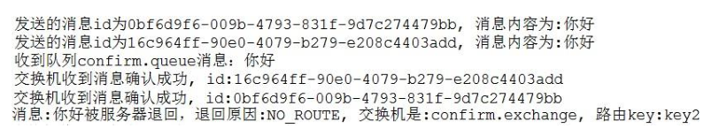
备用交换机 有了 mandatory 参数和回退消息，我们获得了对无法投递消息的感知能力，有机会在生产者的消息无法被投递时发现并处理。但有时候，我们并不知道该如何处理这些无法路由的消息，最多打个日志，然后触发报警，再来手动处理。而通过日志来处理这些无法路由的消息是很不优雅的做法，特别是当生产者所在的服务有多台机器的时候，手动复制日志会更加麻烦而且容易出错。而且设置 mandatory 参数会增加生产者的复杂性，需要添加处理这些被退回的消息的逻辑。如果既不想丢失消息，又不想增加生产者的复杂性 ，该怎么做呢？前面在设置死信队列的文章中，我们提到，可以为队列设置死信交换机来存储那些处理失败的消息，可是这些不可路由消息根本没有机会进入到队列，因此无法使用死信队列来保存消息。
在 RabbitMQ 中，有一种备份交换机的机制存在，可以很好的应对这个问题。 什么是备份交换机呢？备份交换机可以理解为 RabbitMQ 中交换机的“备胎”，当我们为某一个交换机声明一个对应的备份交换机时， 就是为它创建一个备胎，当交换机接收到一条不可路由消息时，将会把这条消息转发到备份交换机中，由备份交换机来进行转发和处理，通常备份交换机的类型为 Fanout ，这样就能把所有消息都投递到与其绑定的队列中，然后我们在备份交换机下绑定一个队列，这样所有那些原交换机无法被路由的消息，就会都进 入这个队列了 。当然，我们还可以建立一个报警队列，用独立的消费者来进行监测和报警。
代码架构图 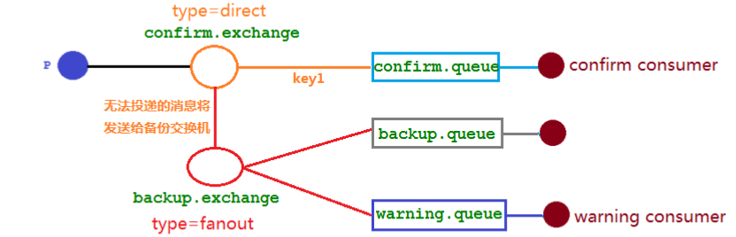
修改配置类 1 2 3 4 5 6 7 8 9 10 11 12 13 14 15 16 17 18 19 20 21 22 23 24 25 26 27 28 29 30 31 32 33 34 35 36 37 38 39 40 41 42 43 44 45 46 47 48 49 50 51 52 53 54 @Configuration public class ConfirmConfig { public static final String CONFIRM_EXCHANGE_NAME = "confirm.exchange" ; public static final String CONFIRM_QUEUE_NAME = "confirm.queue" ; public static final String BACKUP_EXCHANGE_NAME = "backup.exchange" ; public static final String BACKUP_QUEUE_NAME = "backup.queue" ; public static final String WARNING_QUEUE_NAME = "warning.queue" ; @Bean("confirmQueue") public Queue confirmQueue () { return QueueBuilder.durable(CONFIRM_QUEUE_NAME).build(); } @Bean public Binding queueBinding (@Qualifier("confirmQueue") Queue queue, @Qualifier("confirmExchange") DirectExchange exchange) { return BindingBuilder.bind(queue).to(exchange).with("key1" ); } @Bean("backupExchange") public FanoutExchange backupExchange () { return new FanoutExchange (BACKUP_EXCHANGE_NAME); } @Bean("confirmExchange") public DirectExchange confirmExchange () { ExchangeBuilder exchangeBuilder = ExchangeBuilder.directExchange(CONFIRM_EXCHANGE_NAME) .durable(true ) .withArgument("alternate-exchange" , BACKUP_EXCHANGE_NAME); return (DirectExchange)exchangeBuilder.build(); } @Bean("warningQueue") public Queue warningQueue () { return QueueBuilder.durable(WARNING_QUEUE_NAME).build(); } @Bean public Binding warningBinding (@Qualifier("warningQueue") Queue queue,@Qualifier("backupExchange") FanoutExchange backupExchange) { return BindingBuilder.bind(queue).to(backupExchange); } @Bean("backQueue") public Queue backQueue () { return QueueBuilder.durable(BACKUP_QUEUE_NAME).build(); } @Bean public Binding backupBinding (@Qualifier("backQueue") Queue queue,@Qualifier("backupExchange") FanoutExchange backupExchange) { return BindingBuilder.bind(queue).to(backupExchange); } }
报警消费者 1 2 3 4 5 6 7 8 9 10 @Component @Slf4j public class WarningConsumer { public static final String WARNING_QUEUE_NAME = "warning.queue" ; @RabbitListener(queues = WARNING_QUEUE_NAME) public void receiveWarningMsg (Message message) { String msg = new String (message.getBody()); log.error(" 报警发现不可路由消息：{}" , msg); } }
测试注意事项 重新启动项目的时候需要把原来的confirm.exchange 删除因为我们修改了其绑定属性，不然报以下错:
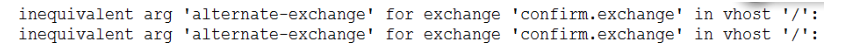
结果分析 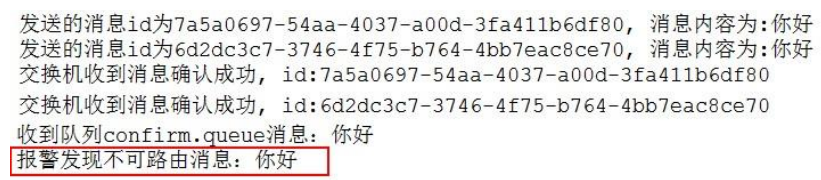
mandatory 参数与备份交换机可以一起使用的时候，如果两者同时开启，消息究竟何去何从？谁优先级高，经过上面结果显示答案是备份交换机优先级高。
RabbitMQ 其他知识点 幂等性 概念: 用户对于同一操作发起的一次请求或者多次请求的结果是一致的，不会因为多次点击而产生了副作用。 举个最简单的例子，那就是支付，用户购买商品后支付，支付扣款成功，但是返回结果的时候网络异常，此时钱已经扣了，用户再次点击按钮，此时会进行第二次扣款，返回结果成功，用户查询余额发现多扣钱了，流水记录也变成了两条。在以前的单应用系统中，我们只需要把数据操作放入事务中即可，发生错误立即回滚，但是再响应客户端的时候也有可能出现网络中断或者异常等等
消息重复消费 消费者在消费 MQ 中的消息时，MQ 已把消息发送给消费者，消费者在给MQ 返回 ack 时网络中断，故 MQ 未收到确认信息，该条消息会重新发给其他的消费者，或者在网络重连后再次发送给该消费者，但实际上该消费者已成功消费了该条消息，造成消费者消费了重复的消息。
消费端的幂等性保障 在海量订单生成的业务高峰期，生产端有可能就会重复发生了消息，这时候消费端就要实现幂等性， 这就意味着我们的消息永远不会被消费多次，即使我们收到了一样的消息。业界主流的幂等性有两种操作:
a. 唯一 ID+指纹码机制,利用数据库主键去重,
b.利用 redis 的原子性去实现
唯一 ID+指纹码机制 指纹码:我们的一些规则或者时间戳加别的服务给到的唯一信息码,它并不一定是我们系统生成的，基本都是由我们的业务规则拼接而来，但是一定要保证唯一性，然后就利用查询语句进行判断这个 id 是否存在数据库中,优势就是实现简单就一个拼接，然后查询判断是否重复；劣势就是在高并发时，如果是单个数据库就会有写入性能瓶颈当然也可以采用分库分表提升性能，但也不是我们最推荐的方式。
Redis原子性 利用 redis 执行 setnx 命令，天然具有幂等性。从而实现不重复消费
优先队列 使用场景 在我们系统中有一个订单催付的场景 ，我们的客户在天猫下的订单,淘宝会及时将订单推送给我们，如果在用户设定的时间内未付款那么就会给用户推送一条短信提醒 ，很简单的一个功能对吧，但是，tmall商家对我们来说，肯定是要分大客户和小客户的对吧，比如像苹果，小米这样大商家一年起码能给我们创造很大的利润，所以理应当然，他们的订单必须得到优先处理，而曾经我们的后端系统是使用 redis 来存放的定时轮询，大家都知道 redis 只能用 List 做一个简简单单的消息队列，并不能实现一个优先级的场景，所以订单量大了后采用 RabbitMQ 进行改造和优化,如果发现是大客户的订单给一个相对比较高的优先级，否则就是默认优先级。
如何添加 a. 控制台页面添加 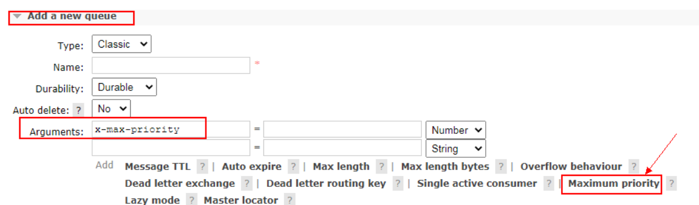
b. 队列中代码添加优先级 1 2 3 Map<String, Object> params = new HashMap (); params.put("x-max-priority" , 10 ); channel.queueDeclare("hello" , true , false , false , params);
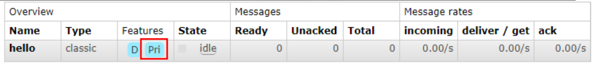
c. 消息中代码添加优先级 1 AMQP.BasicProperties properties = new AMQP .BasicProperties().builder().priority(5 ).build();
d. 注意事项:
要让队列实现优先级需要做的事情有如下事情:队列需要设置为优先级队列，消息需要设置消息的优先级，消费者需要等待消息已经发送到队列中才去消费因为，这样才有机会对消息进行排序\
实战 消息生产者:
1 2 3 4 5 6 7 8 9 10 11 12 13 14 15 16 17 public class Producer {private static final String QUEUE_NAME="hello" ;public static void main (String[] args) throws Exception { Channel channel = RabbitMqUtils.getChannel(); AMQP.BasicProperties properties = new AMQP .BasicProperties().builder().priority(5 ).build(); for (int i = 1 ; i <11 ; i++){ String message = "info" +i; if (i==5 ){ channel.basicPublish("" , QUEUE_NAME, properties, message.getBytes()); }else { channel.basicPublish("" , QUEUE_NAME, null , message.getBytes()); } System.out.println(" 发送消息完成:" + message); } } }
消息消费者:
1 2 3 4 5 6 7 8 9 10 11 12 13 14 15 16 17 public class Consumer {private static final String QUEUE_NAME="hello" ;public static void main (String[] args) throws Exception { Channel channel = RabbitMqUtils.getChannel(); Map<String, Object> params = new HashMap (); params.put("x-max-priority" , 10 ); channel.queueDeclare(QUEUE_NAME, true , false , false , params); System.out.println(" 消费者启动等待消费 .............. " ); DeliverCallback deliverCallback=(consumerTag, delivery)->{ String receivedMessage = new String (delivery.getBody()); System.out.println(" 接收到消息:" +receivedMessage); }; channel.basicConsume(QUEUE_NAME,true ,deliverCallback,(consumerTag)->{ System.out.println(" 消费者无法消费消息时调用，如队列被删除" ); }); }
惰性队列 使用场景 RabbitMQ 从 3.6.0 版本开始引入了惰性队列的概念。惰性队列会尽可能的将消息存入磁盘中，而在消费者消费到相应的消息时才会被加载到内存中，它的一个重要的设计目标是能够支持更长的队列，即支持更多的消息存储。当消费者由于各种各样的原因(比如消费者下线、宕机亦或者是由于维护而关闭等)而致使长时间内不能消费消息造成堆积时，惰性队列就很有必要了 。
默认情况下，当生产者将消息发送到 RabbitMQ 的时候，队列中的消息会尽可能的存储在内存之中，这样可以更加快速的将消息发送给消费者。即使是持久化的消息，在被写入磁盘的同时也会在内存中驻留一份备份。 当 RabbitMQ 需要释放内存的时候，会将内存中的消息换页至磁盘中，这个操作会耗费较长的时间，也会阻塞队列的操作，进而无法接收新的消息。虽然 RabbitMQ 的开发者们一直在升级相关的算法，但是效果始终不太理想，尤其是在消息量特别大的时候。
两种模式 队列具备两种模式：default 和 lazy。默认的为 default 模式，在 3.6.0 之前的版本无需做任何变更。lazy 模式即为惰性队列的模式，可以通过调用 channel.queueDeclare 方法的时候在参数中设置，也可以通过Policy 的方式设置，如果一个队列同时使用这两种方式设置的话，那么 Policy 的方式具备更高的优先级。 如果要通过声明的方式改变已有队列的模式的话，那么只能先删除队列，然后再重新声明一个新的。在队列声明的时候可以通过“x-queue-mode”参数来设置队列的模式 ，取值为“default”和“lazy”。下面示例中演示了一个惰性队列的声明细节：
1 2 3 Map<String, Object> args = new HashMap <String, Object>(); args.put("x-queue-mode" , "lazy" ); channel.queueDeclare("myqueue" , false , false , false , args);
内存开销对比 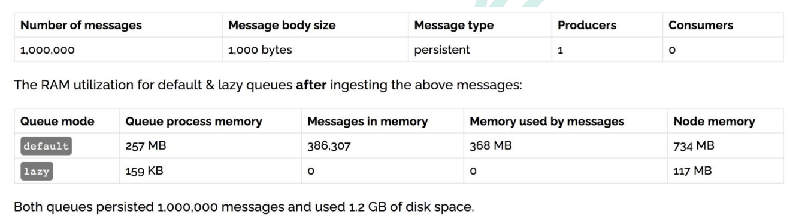
在发送 1 百万条消息，每条消息大概占 1KB 的情况下，普通队列占用内存是 1.2GB，而惰性队列仅仅占用 1.5MB
RabbitMQ 集群 clustering 使用集群的原因 最开始我们介绍了如何安装及运行 RabbitMQ 服务，不过这些是单机版的，无法满足目前真实应用的要求。如果 RabbitMQ 服务器遇到内存崩溃、机器掉电或者主板故障等情况，该怎么办？单台 RabbitMQ服务器可以满足每秒 1000 条消息的吞吐量，那么如果应用需要 RabbitMQ 服务满足每秒 10 万条消息的吞吐量呢？购买昂贵的服务器来增强单机 RabbitMQ 务的性能显得捉襟见肘，搭建一个 abbitMQ 集群才是解决实际问题的关键.
搭建步骤 修改 3 台机器的主机名称
配置各个节点的 hosts 文件，让各个节点都能互相识别对方
10.211.55.74 node1
以确保各个节点的 cookie 文件使用的是同一个值
在 node1 上执行远程操作命令
1 2 scp /var/lib/rabbitmq/.erlang.cookie root@node2:/var/lib/rabbitmq/.erlang.cookie scp /var/lib/rabbitmq/.erlang.cookie root@node3:/var/lib/rabbitmq/.erlang.cookie
启动 RabbitMQ 服务,顺带启动 Erlang 虚拟机和 RbbitMQ 应用服务(在三台节点上分别执行以下命令)
1 rabbitmq-server -detached
在节点 2 执行:
1 2 3 4 5 6 rabbitmqctl stop_app rabbitmqctl reset rabbitmqctl join_cluster rabbit@node1 rabbitmqctl start_app
在节点 3 执行:
1 2 3 4 rabbitmqctl stop_app rabbitmqctl reset rabbitmqctl join_cluster rabbit@node2 rabbitmqctl start_app
集群状态:
1 rabbitmqctl cluster_status
需要重新设置用户
1 2 3 rabbitmqctl add_user admin 123 rabbitmqctl set_user_tags admin administrator rabbitmqctl set_permissions -p "/" admin ".*" ".*" ".*"
解除集群节点(node2 和 node3 机器分别执行)
1 2 3 4 5 6 rabbitmqctl stop_app rabbitmqctl reset rabbitmqctl start_app rabbitmqctl cluster_status rabbitmqctl forget_cluster_node rabbit@node2
镜像队列 使用镜像的原因 如果 RabbitMQ 集群中只有一个 Broker 节点，那么该节点的失效将导致整体服务的临时性不可用，并且也可能会导致消息的丢失。可以将所有消息都设置为持久化，并且对应队列的durable 属性也设置为true， 但是这样仍然无法避免由于缓存导致的问题：因为消息在发送之后和被写入磁盘井执行刷盘动作之间存在一个短暂却会产生问题的时间窗。通过 publisherconfirm 机制能够确保客户端知道哪些消息己经存入磁盘， 尽管如此，一般不希望遇到因单点故障导致的服务不可用。
引入镜像队列(Mirror Queue)的机制，可以将队列镜像到集群中的其他 Broker 节点之上，如果集群中的一个节点失效了，队列能自动地切换到镜像中的另一个节点上以保证服务的可用性。
搭建步骤
启动三台集群节点
随便找一个节点添加 policy
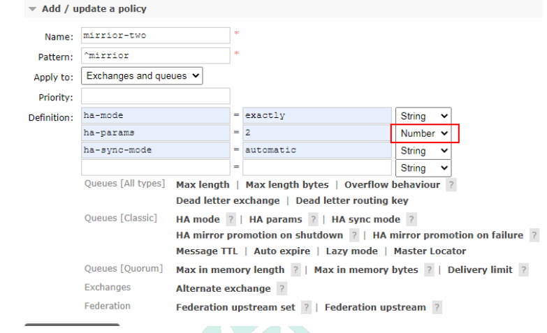
在 node1 上创建一个队列发送一条消息，队列存在镜像队列
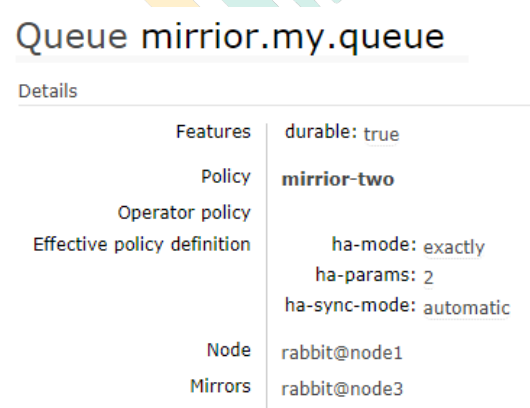
停掉 node1 之后发现 node2 成为镜像队列
5.就算整个集群只剩下一台机器了 依然能消费队列里面的消息， 说明队列里面的消息被镜像队列传递到相应机器里面了
Haproxy+Keepalive 实现高可用负载均衡 整体架构图
HAProxy 提供高可用性、负载均衡及基于TCPHTTP 应用的代理，支持虚拟主机，它是免费、快速并且可靠的一种解决方案，包括 Twitter,Reddit,StackOverflow,GitHub 在内的多家知名互联网公司在使用。HAProxy 实现了一种事件驱动、单一进程模型，此模型支持非常大的井发连接数。扩展： nginx,lvs,haproxy 之间的区别: http://www.ha97.com/5646.html
搭建步骤
下载 haproxy(在 node1 和 node2)
修改 node1 和 node2 的 haproxy.cfg, 需要修改红色 IP 为当前机器 IP
1 vim /etc/haproxy/haproxy.cfg
在两台节点启动 haproxy
1 2 haproxy -f /etc/haproxy/haproxy.cfg ps -ef | grep haproxy
访问地址: http://10.211.55.71:8888/stats
Keepalived 实现双机主备 试想如果前面配置的 HAProxy 主机突然宕机或者网卡失效，那么虽然 RbbitMQ 集群没有任何故障但是对于外界的客户端来说所有的连接都会被断开结果将是灾难性的为了确保负载均衡服务的可靠性同样显得十分重要，这里就要引入 Keepalived 它能够通过自身健康检查、资源接管功能做高可用(双机热备)，实现故障转移.
下载 keepalived
1 yum -y install keepalived
节点 node1 配置文件, 把资料里面的 keepalived.conf 修改之后替换
1 vim /etc/keepalived/keepalived.conf
节点 node2 配置文件,
需要修改global_defs 的 router_id,如:nodeB, 其次要修改 vrrp_instance_VI 中 state 为”BACKUP”； 最后要将priority 设置为小于 100 的值
添加 haproxy_chk.sh, (为了防止 HAProxy 服务挂掉之后 Keepalived 还在正常工作而没有切换到 Backup 上，所以这里需要编写一个脚本来检测 HAProxy 务的状态,当 HAProxy 服务挂掉之后该脚本会自动重启HAProxy 的服务，如果不成功则关闭 Keepalived 服务，这样便可以切换到 Backup 继续工作)
1 2 3 vim /etc/keepalived/haproxy_chk.sh chmod 777 /etc/keepalived/haproxy_chk.sh
5.启动 keepalive 命令(node1 和 node2 启动)
1 systemctl start keepalived
观察 Keepalived 的日志
1 tail -f /var/log/messages -n 200
观察最新添加的 vip
node1 模拟 keepalived 关闭状态
1 systemctl stop keepalived
使用 vip 地址来访问 rabbitmq 集群
Federation Exchange 使用它的原因 (broker 北京)，(broker 深圳)彼此之间相距甚远，网络延迟是一个不得不面对的问题。有一个在北京的业务(Client 北京) 需要连接(broker 北京)，向其中的交换器 exchangeA 发送消息，此时的网络延迟很小，(Client 北京)可以迅速将消息发送至 exchangeA 中，就算在开启了 publisherconfirm 机制或者事务机制的情况下，也可以迅速收到确认信息。此时又有个在深圳的业务(Client 深圳)需要向 exchangeA 发送消息， 那么(Client 深圳) (broker 北京)之间有很大的网络延迟，(Client 深圳) 将发送消息至 exchangeA 会经历一定的延迟，尤其是在开启了 publisherconfirm 机制或者事务机制的情况下，(Client 深圳) 会等待很长的延迟时间来接收(broker 北京)的确认信息，进而必然造成这条发送线程的性能降低，甚至造成一定程度上的阻塞。
Shovel 使用它的原因: Federation 具备的数据转发功能类似，Shovel 够可靠、持续地从一个 Broker 中的队列(作为源端，即source)拉取数据并转发至另一个 Broker 中的交换器(作为目的端，即 destination)。作为源端的队列和作为目的端的交换器可以同时位于同一个 Broker，也可以位于不同的 Broker 上。Shovel 可以翻译为”铲子”， 是一种比较形象的比喻，这个”铲子”可以将消息从一方”铲子”另一方。Shovel 行为就像优秀的客户端应用程序能够负责连接源和目的地、负责消息的读写及负责连接失败问题的处理。